<!doctype html>
<html lang="en">
<head>
  <meta charset="utf-8">
  <meta name="viewport" content="width=device-width, initial-scale=1">
  <title>arxiv digest — 2026-09-09</title>
  <style>
:root {
  --bg: #ffffff;
  --fg: #1f2328;
  --muted: #59636e;
  --border: #d0d7de;
  --card: #f6f8fa;
  --link: #0969da;
}
body {
  max-width: 980px;
  margin: 0 auto;
  padding: 2rem 1rem 5rem;
  font-family: -apple-system, BlinkMacSystemFont, "Segoe UI", Helvetica, Arial, sans-serif;
  line-height: 1.55;
  color: var(--fg);
  background: var(--bg);
}
a { color: var(--link); }
img { max-width: 100%; height: auto; }
pre, code { background: var(--card); border-radius: 6px; }
pre { padding: 1rem; overflow-x: auto; }
blockquote { border-left: 4px solid var(--border); padding-left: 1rem; color: var(--muted); }
details { margin: 0.6rem 0; }
summary { cursor: pointer; font-weight: 600; }
.paper-figures-scroll {
  display: flex;
  gap: 1rem;
  overflow-x: auto;
  overscroll-behavior-x: contain;
  padding: 0.75rem 0.25rem 1rem;
  margin: 1rem 0 1.25rem;
  border-top: 1px solid var(--border);
  border-bottom: 1px solid var(--border);
  scroll-snap-type: x proximity;
}
.paper-figure-card {
  flex: 0 0 min(260px, 72vw);
  scroll-snap-align: start;
  background: var(--card);
  border: 1px solid var(--border);
  border-radius: 12px;
  padding: 0.55rem;
}
.paper-figure-card img {
  display: block;
  width: 100%;
  max-height: 240px;
  object-fit: contain;
  background: white;
  border-radius: 8px;
}
.paper-figure-caption {
  display: block;
  margin-top: 0.5rem;
  color: var(--muted);
  font-size: 0.85rem;
}
.figure-strip-hint {
  color: var(--muted);
  font-size: 0.9rem;
  margin-bottom: -0.3rem;
}
</style>
  <!-- MathJax: renders $...$ inline math and $$...$$ display math, plus
       \(...\) and \[...\]. Loaded from the official CDN; works offline
       once cached. Configured to skip code/pre blocks so arxiv IDs that
       look like dollar amounts don't get mangled. -->
  <script>
    window.MathJax = {
      tex: {
        inlineMath: [['$', '$'], ['\\(', '\\)']],
        displayMath: [['$$', '$$'], ['\\[', '\\]']],
        processEscapes: true,
        processEnvironments: true
      },
      options: {
        skipHtmlTags: ['script', 'noscript', 'style', 'textarea', 'pre', 'code'],
        ignoreHtmlClass: 'tex2jax_ignore',
        processHtmlClass: 'tex2jax_process'
      }
    };
  </script>
  <script id="MathJax-script" async
    src="https://cdn.jsdelivr.net/npm/mathjax@3/es5/tex-chtml.js"></script>
</head>
<body>
<header style="background-color: #333; color: white; padding: 15px; margin-bottom: 20px;">
  <h1 style="margin: 0; font-size: 24px;">
    <a href="https://ochelpan.github.io/arXiv_clean/" style="color: white; text-decoration: none;">Main</a>
  </h1>
</header>

<h1>Daily arXiv Report</h1>

<hr>
<p>
<a href="index.html">← Index</a>
 · <a href="papers_02.html">Next →</a>
</p>
<hr>

<h2>Papers 1–20</h2>
<p><a id="paper-2609.07830"></a></p>
<h3 id="exact-fermionic-dual-of-the-bose-hubbard-model">⭐ <a href="http://arxiv.org/abs/2609.07830v1">Exact fermionic dual of the Bose-Hubbard model</a></h3>
<p><strong>Highlighted author(s):</strong> Aashish A. Clerk<br>
<strong>Authors:</strong> Lei Su, Ivar Martin, Aashish A. Clerk<br>
<strong>Type:</strong> theory · <strong>Category:</strong> strongly correlated electrons · <strong>PDF:</strong> <a href="https://arxiv.org/pdf/2609.07830v1">https://arxiv.org/pdf/2609.07830v1</a><br>
<strong>Analysis basis:</strong> full PDF text, analyzed in chunks
<strong>Topic relevance:</strong> 🔥 <code>analog quantum simulation</code> <strong>4/5</strong> · <code>Keldysh / 2PI / non-Gaussian methods</code> <strong>1/5</strong></p>
<div class="figure-strip-hint">↔ Scroll figures horizontally</div>
<div class="paper-figures-scroll">
<figure class="paper-figure-card">
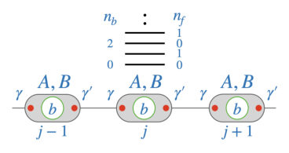
<figcaption class="paper-figure-caption"><b>Fig 1.</b> FIG. 1: Fermionic gauging of the 1D Bose-Hubbard model. One b boson resides on each site. A pair of Ma- jorana fermions, γ′ j and γj+1, is inserted between two neighboring bosons, and a Gauss law is imposed at each site. The gauging projects out the onsite sub-Hilbert space with odd boson number nb and replaces it with a Z2-graded fermionic level nf, yielding a new fermionic composite A or B.</figcaption>
</figure>
<figure class="paper-figure-card">
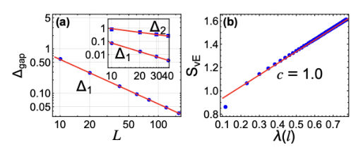
<figcaption class="paper-figure-caption"><b>Fig 2.</b> FIG. 2: (a) Finite-size scaling of ∆1 = E1 −Egs in the gapless phase of the fermionic dual at unit-filling for U/t = 2.0 under OBCs. The slope of the fit is −1. Inset: finite-size scaling of ∆1 = E1 −Egs and ∆2 = E2 −Egs under PBCs with fitted slopes 2.15 and 0.89, respectively. ∆1 decreases faster than 1/L, signal- ing a twofold ground-state degeneracy in the thermody- namic limit. (b) Subsystem entanglement entropy as a function of λ(l) = 1 6 ln( 2L</figcaption>
</figure>
<figure class="paper-figure-card">
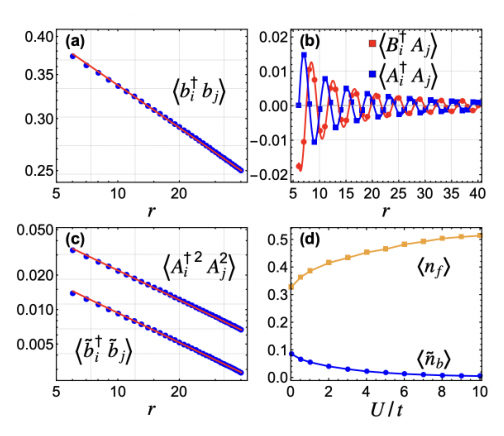
<figcaption class="paper-figure-caption"><b>Fig 3.</b> FIG. 3: (a) Scaling of ⟨b† ibj⟩in the superfluid phase of the BH model at half filling, ⟨nb⟩= 0.5, as a func- tion of r = |j −i|, for U/t = 2.0 and L = 160 un- der OBCs. The starting site is i = L/4. The fitted slope yields 2∆0,1 ≈0.215, corresponding to K ≈2.3 in Eq. (14). (b-c) Gapless phase of the fermionic dual at half filling, ⟨2˜nb + nf⟩= 0.5. (b) ⟨B† i Aj⟩and ⟨A† iAj⟩ for U/t = 2.0 and L = 160 under OBCs, both fitted to a sin(πρ0r + b)r−2∆1,1, with 2∆1,1 ≈1.38 and ρ0 ≈0.49. The correlation ⟨f † i fj⟩(not shown) exhibits similar be- havior to ⟨A† iAj⟩. (c) ⟨A†2 i A2 j⟩and ⟨˜b† i˜bj⟩shown on a log-log scale, with the fits determined by 2∆0,2 ≈0.86. (d) Average onsite densities ⟨˜nb⟩and...</figcaption>
</figure>
<figure class="paper-figure-card">
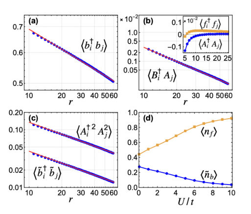
<figcaption class="paper-figure-caption"><b>Fig 4.</b> FIG. 4: (a) Scaling of ⟨b† ibj⟩in the superfluid phase of the BH model at unit filling, ⟨nb⟩= 1, as a function of r = |j −i|, for U/t = 2.0 and L = 160 under OBCs. The starting site is i = L/4. The fitted slope yields 2∆0,1 ≈0.172, corresponding to K ≈2.9 in Eq. (14). (b-c) Gapless phase of the fermionic dual at unit filling, ⟨2˜nb + nf⟩= 1. (b) ⟨B† i Aj⟩for U/t = 2.0 and L = 160 under OBCs, shown on a log-log scale, with the fit determined by 2∆1,1 ≈1.63. Inset: scaling of ⟨f † i fj⟩and ⟨A† iAj⟩, both of which decay rapidly to near zero within a few lattice spacings. (c) ⟨A†2 i A2 j⟩and ⟨˜b† i˜bj⟩shown on a log-log scale, with the fits determined by 2∆0,2 ≈0.69. (d) Average onsite...</figcaption>
</figure>
<figure class="paper-figure-card">
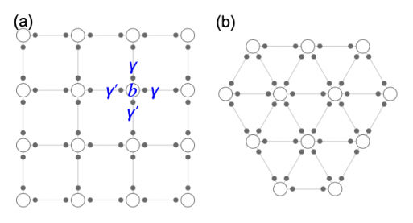
<figcaption class="paper-figure-caption"><b>Fig 5.</b> FIG. 5: Fermionic gauging of the 2D Bose-Hubbard model on the square lattice (a) and triangular lattice (b). One b boson is placed on each vertex and a pair of Majo- rana fermions, γ and γ′, is introduced on each edge such that each boson is surrounded by four (six) Majorana fermions. A Gauss law is imposed at each vertex, while a flatness condition is imposed on the eight (six) Majorana fermions surrounding each square (triangular) face.</figcaption>
</figure>
</div>

<p><strong>Summary.</strong> This work establishes an exact fermionic dual for the Bose-Hubbard model by employing fermionic gauging techniques. It shows that the model can be recast into a fermionic description, whose low-energy behavior is captured by the sine-Gordon model. This provides a powerful, unified theoretical framework for studying strongly correlated bosonic and fermionic quantum matter.</p>
<p><strong>Why it may be interesting.</strong> The explicit mapping between bosonic and fermionic descriptions of strongly correlated systems like the BH model provides powerful theoretical tools for understanding quantum phases in optical lattices.</p>
<details>
<summary>Detailed structure</summary>
<p><strong>Main problem.</strong> The paper derives an exact fermionic dual description for the Bose-Hubbard (BH) model, extending known duality mappings.</p>
<p><strong>Main result.</strong> An exact dual Hamiltonian is constructed in terms of boson-fermion composite operators, revealing that the low-energy physics is governed by the sine-Gordon model.</p>
<p><strong>Method.</strong> The core method involves applying fermionic gauging to the BH model's U(1) symmetry, realizing generalized Jordan-Wigner transformations, and analyzing the resulting low-energy effective field theory.</p>
<p><strong>Model / system.</strong> The primary system is the Bose-Hubbard (BH) model, which describes interacting bosons on a lattice. The analysis extends this to include fermionic composites and is analyzed in 1D and 2D settings.</p>
<p><strong>Key observables.</strong> The oscillation wave vector of the fermionic composite correlation function, and the nature of the phase transition (superfluid vs. Mott insulating).</p>
<p><strong>Important parameters / regimes.</strong> The ratio of interaction strength to hopping ($U/t$), and the filling factor (density).</p>
<p><strong>Assumptions / limitations.</strong> The analysis relies on unitary disentangling transformations and assumes the applicability of low-energy effective theories like the sine-Gordon model.</p>
<p><strong>Figures summary.</strong> Figures illustrate the fermionic gauging process, showing the insertion of Majorana fermions and the resulting structure of the dual Hamiltonian and correlation functions.</p>
<p><strong>Paper structure.</strong> The paper proceeds by introducing the fermionic gauging procedure to the BH model, deriving the dual Hamiltonian, analyzing the low-energy continuum limit via bosonization (sine-Gordon/Thirring equivalence), and finally discussing boundary effects and generalizations to higher dimensions.</p>
</details>
<details>
<summary>Abstract</summary>
<p>Recent developments have established exact bosonization and fermionization with a $\mathbb{Z}_2$ symmetry as dualities through gauging. In this work, we apply fermionic gauging, which realizes generalized Jordan-Wigner transformations, to the Bose-Hubbard (BH) model with a global $U(1)$ symmetry and derive an exact dual description in terms of fermionic composites, built from bosons and fermions. In 1D, this duality generalizes the exact mapping between the extended hard-core BH model and the spinless Fermi-Hubbard model to now cover soft-core interactions. At low energies, the mapping reduces to the well-known equivalence between the sine-Gordon model and the Thirring model. The oscillation wave vector of the fermionic composite correlation function in the gapless phase is fixed by their density, providing a novel manifestation of Luttinger's theorem. We verify the exact duality using density matrix renormalization group (DMRG) calculations and demonstrate that the gapless phase and the phase transition are governed by the compact boson conformal field theory. Our construction naturally extends to generic bosonic systems and higher dimensions, opening new avenues for studying Bose-Fermi mixtures in optical lattices and other strongly correlated quantum systems.</p>
</details>
<p><sub><a href="#top">↑ back to top</a></sub></p>

<p><a id="paper-2609.09125"></a></p>
<h3 id="few-body-bound-states-in-the-anyon-hubbard-model">⭐ <a href="http://arxiv.org/abs/2609.09125v1">Few-body bound states in the anyon-Hubbard model</a></h3>
<p><strong>Highlighted author(s):</strong> Markus Greiner<br>
<strong>Authors:</strong> Isaac Tesfaye, Christina Mascherbauer, Joyce Kwan, Perrin Segura, Yanfei Li, Markus Greiner, Luis Santos, André Eckardt, Brice Bakkali-Hassani<br>
<strong>Type:</strong> theory · <strong>Category:</strong> strongly correlated electrons · <strong>PDF:</strong> <a href="https://arxiv.org/pdf/2609.09125v1">https://arxiv.org/pdf/2609.09125v1</a><br>
<strong>Analysis basis:</strong> full PDF text, analyzed in chunks
<strong>Topic relevance:</strong> <code>analog quantum simulation</code> <strong>3/5</strong></p>
<div class="figure-strip-hint">↔ Scroll figures horizontally</div>
<div class="paper-figures-scroll">
<figure class="paper-figure-card">
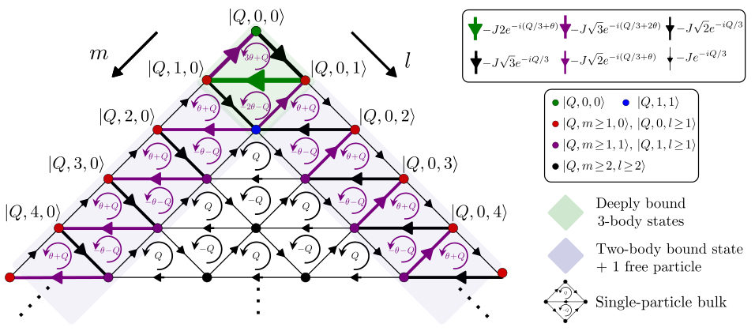
<figcaption class="paper-figure-caption"><b>Fig 1.</b> FIG. 1. Three-particle relative coordinate space. Illustration of the semi-infinite 2D lattice associated with the relative coordinate space corresponding to the Hamiltonian ˆHQ (4), which for each COM quasimomentum Q is spanned by the basis states {|Q, m, l⟩}. The matrix elements of ˆHQ define the tunneling processes between the different sites of this lattice, which are depicted by the arrows, whose color and thickness indicate the Peierls phase and the amplitude of the tunneling process, respectively. The values inside encircling arrows indicate the flux through the plaquettes of the lattice, corresponding to the phase that is acquired when tunneling around the plaquette along the...</figcaption>
</figure>
<figure class="paper-figure-card">
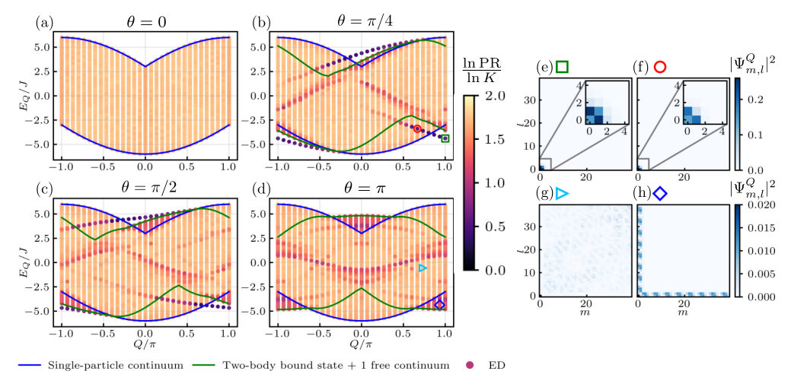
<figcaption class="paper-figure-caption"><b>Fig 2.</b> FIG. 2. Three-particle energy spectrum of the AHM for U = 0. Three-particle energy spectrum EQ as a function of the COM quasimomentum Q for θ = 0, π/4, π/2, π is shown in (a), (b), (c), and (d), respectively. The blue solid lines indicate the edges of the continuum of three independent particles, whereas the green solid lines provide the boundaries of the continuum spanned by two-particle bound states and one free particle. The exact diagonalization (ED) results for each Q value are shown via the dots, whose color indicates the scaled participation ratio ln(PR)/ ln(K) (5), whose value roughly indicates the dimension of the subspace over which the corresponding eigenstate |Ψ⟩is delocalized....</figcaption>
</figure>
<figure class="paper-figure-card">
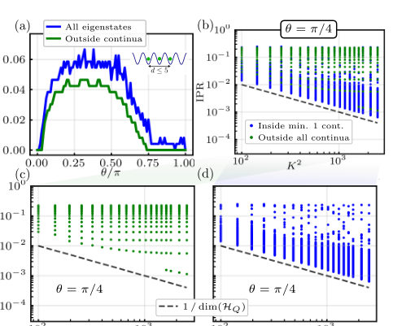
<figcaption class="paper-figure-caption"><b>Fig 3.</b> FIG. 3. Three-body bound state fraction and finite-size scal- ing of the three-particle spectrum. (a) Bound state fraction as a function of the statistical angle θ for the entire three- particle spectrum (4) defined as the fraction of states with PR (5) below that of states where the left and right particle are at most separated by five sites for all eigenstates in blue and for eigenstates outside the continua in green. (b) Inverse participation ratio IPR (5) for a fixed statistical angle θ = π/4 as a function of the size of the relative coordinate space K2</figcaption>
</figure>
<figure class="paper-figure-card">
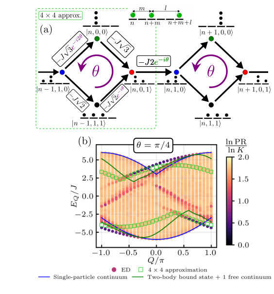
<figcaption class="paper-figure-caption"><b>Fig 4.</b> FIG. 4. Effective three-particle energy spectrum for (po- tential) three-body bound states in the AHM for U = 0. (a) Ansatz for three-body bound states, including only configura- tions with particles sitting on neighboring sites and the tun- neling matrix elements connecting them, which is obtained from truncating the three-particle configuration space to ba- sis states |n, m, l⟩with 0 ≤m, l ≤1. In the experimentally constrained version of the AHM [1, 3, 52] three-particle coin- cidences |n, 0, 0⟩(green-colored sites) and the Peierls phases for tunneling from an originally doubly to a singly occupied site (red- to blue-colored sites) are excluded and set to zero, respectively. (b) An...</figcaption>
</figure>
<figure class="paper-figure-card">
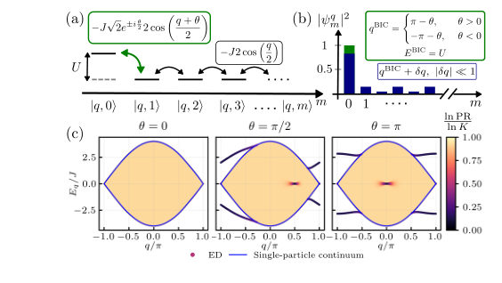
<figcaption class="paper-figure-caption"><b>Fig 5.</b> FIG. 5. Two-body bound states in the continuum. (a) Illus- tration of the Hamiltonian ˆHq (6) acting in the relative coordi- nate space of the two-particle AHM with COM quasimomen- tum q, whose states {|q, m⟩} form a semi-infinite chain. (b) Sketch of the weights |ψq m|2 for two types of bound states of the wave function in the relative coordinate space, for the spe- cial bound states: (i) perfect BIC (green) where qBIC = nπ−θ for θ ̸= 0 and n ∈{−1, 1} and (ii) quasi-BICs in the proxim- ity of the perfect BIC condition q = qBIC + δq (blue), which are highly localized for |δq| ≪1, and leak into the continuum as a traveling wave ψq m≥1 ∼ψq 0e−iκmv∗(q)/t(q) with the am- plitude |v(q)/t(q)|...</figcaption>
</figure>
</div>

<p><strong>Summary.</strong> This theoretical study investigates few-body bound states in the Anyon-Hubbard Model, a system modeling particles with fractional statistics. The authors demonstrate that these clusters are bound by purely kinematic effects, not just interactions, allowing for unique fast chiral transport. The findings provide a detailed theoretical roadmap for experimentally probing these exotic, strongly correlated quantum states.</p>
<p><strong>Why it may be interesting.</strong> This work bridges concepts from topological matter (anyons) and strongly correlated lattice models (Hubbard model), providing concrete, analytically derived predictions about novel quantum phases (kinematically bound clusters) that can be tested via time-of-flight expansion dynamics.</p>
<details>
<summary>Detailed structure</summary>
<p><strong>Main problem.</strong> The paper theoretically investigates the existence and properties of few-body bound states (two-, three-, and four-body) within the Anyon-Hubbard Model (AHM). It specifically contrasts kinematic binding mechanisms with conventional energetic binding.</p>
<p><strong>Main result.</strong> The AHM hosts exact two-body bound states for any non-zero fractional statistics angle $\theta$, and it exhibits genuine three- and four-body bound states. These clusters are bound by kinematics, enabling fast chiral transport.</p>
<p><strong>Method.</strong> The analysis involves mapping the problem to a single-particle problem on a relative coordinate space (triangular lattice) and employing variational approximations and exact diagonalization (ED) techniques.</p>
<p><strong>Model / system.</strong> The system is the Anyon-Hubbard Model (AHM), which describes particles with fractional exchange statistics ($\theta$). The Hamiltonian is formulated in a bosonic representation with density-dependent Peierls phases.</p>
<p><strong>Key observables.</strong> Existence and nature of bound states (2-, 3-, 4-body), binding mechanism (kinematic vs. energetic), and signatures observable in expansion dynamics.</p>
<p><strong>Important parameters / regimes.</strong> Fractional statistics angle $\theta$, on-site interaction $U$, and the quasimomentum $Q$.</p>
<p><strong>Assumptions / limitations.</strong> The analysis relies on mapping the problem to a single-particle Hamiltonian in the relative coordinate space and using variational methods for the three-body case.</p>
<p><strong>Figures summary.</strong> Figure 1 illustrates the three-particle relative coordinate space, showing the lattice structure and colored regions indicating deeply bound 3-body (green) and 2-body (purple) states. Figure 2 shows the three-particle energy spectrum $E_Q$ vs. $Q$ for various $\theta$ values.</p>
<p><strong>Paper structure.</strong> The paper first establishes the AHM framework and the problem of few-body states. It then uses theoretical analysis and variational methods to prove the existence of kinematic bound states. Finally, it details the diagonalization of the relative coordinate Hamiltonian to characterize the different types of bound states (Type-I, Type-II, 3-body).</p>
</details>
<details>
<summary>Abstract</summary>
<p>Quantum statistics in low-dimensional systems predicts anyonic particles with fractional exchange statistics which are neither that of bosons nor fermions. While anyons are typically found in two dimensions as excitations of topologically-ordered states of matter, anyon-like exchange statistics has also been discussed in one dimension, for instance, in the context of the anyon-Hubbard model (AHM), the physics of which has recently been observed in experiment [Kwan et al., arXiv:2306.01737; Dhar et al., arXiv:2412.21131; and Bakkali-Hassani et al., arXiv:2602.20421]. The AHM can be formulated in terms of bosons featuring density-dependent Peierls phases, described by a statistical phase angle $θ$, which controls asymmetric transport and the formation of dynamically bound pairs at finite momentum. Here, we show theoretically that the AHM also hosts exact two-body bound states in the continuum (BICs) for arbitrary $θ\neq 0$, and genuine three- and four-body bound states. Unlike conventional bound states stabilized by attractive (or repulsive) interactions, which are energetically localized with a large effective mass, these clusters here are bound by a purely kinematic mechanism endowing them with fast chiral transport properties. We provide a simple variational approximation to the three-body bound states and explain their binding mechanism. Moreover, we show that the signatures of three-body bound states in the AHM can be directly probed experimentally from the expansion dynamics starting from three localized particles.</p>
</details>
<p><sub><a href="#top">↑ back to top</a></sub></p>

<p><a id="paper-2609.08134"></a></p>
<h3 id="observation-of-multipartite-spin-entanglement-in-a-cuprate-chain">⭐ <a href="http://arxiv.org/abs/2609.08134v1">Observation of multipartite spin entanglement in a cuprate chain</a></h3>
<p><strong>Highlighted author(s):</strong> M. D. Lukin<br>
<strong>Authors:</strong> S. F. R. TenHuisen, Z. Shen, V. Bhartiya, V. Menon, P. Sharma, H. Padma, Z. Guan, W. He, M. K. Lajer, J. Li, D. Banerjee, J. Pelliciari, I. A. Zaliznyak, G. D. Gu, M. D. Lukin, S. Johnston, M. P. M. Dean, V. Bisogni, Y. Wang, M. Mitrano<br>
<strong>Type:</strong> both · <strong>Category:</strong> strongly correlated electrons · <strong>PDF:</strong> <a href="https://arxiv.org/pdf/2609.08134v1">https://arxiv.org/pdf/2609.08134v1</a><br>
<strong>Analysis basis:</strong> full PDF text, analyzed in chunks
<strong>Topic relevance:</strong> <code>analog quantum simulation</code> <strong>2/5</strong> · <code>quantum measurements</code> <strong>2/5</strong></p>
<div class="figure-strip-hint">↔ Scroll figures horizontally</div>
<div class="paper-figures-scroll">
<figure class="paper-figure-card">
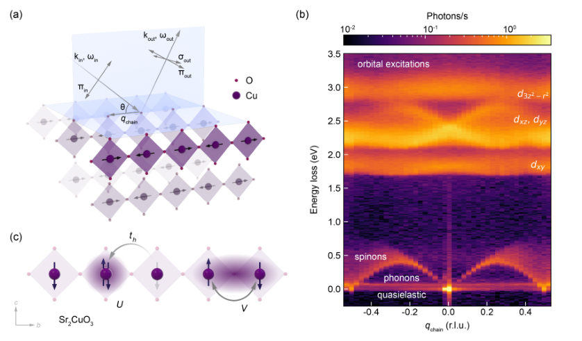
<figcaption class="paper-figure-caption"><b>Fig 1.</b> FIG. 1. Collective excitations of the cuprate chain Sr2CuO3. (a) Sketch of the Cu L3-edge RIXS experiment. We use incident π-polarized light to maximize the scattering cross section, and tune the momentum transfer along the chain direction by varying the sample angle, θ. kin (kout) and ℏωin (ℏωout) denote initial (final) momentum and energy of the X-ray photons. (b) Cu L3-edge RIXS intensity map along the chain direction at 35 K, measured by tuning ℏωin to the maximum of the Cu L3 X-ray absorption peak. Below 1 eV, the spectra exhibit dispersing two-spinon excitations; between 1.7 and 3.2 eV they reveal a manifold of d-orbital excitations. Owing to spin-orbital separation, dxz and dyz...</figcaption>
</figure>
<figure class="paper-figure-card">
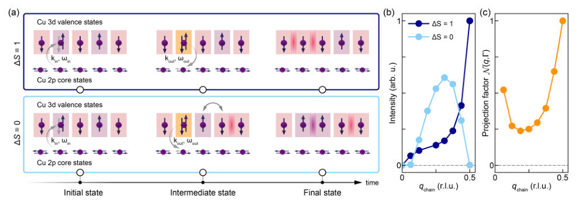
<figcaption class="paper-figure-caption"><b>Fig 2.</b> FIG. 2. Two distinct two-spinon excitation pathways. (a) Following resonant X-ray absorption, two-spinon excitations are generated via spin-flip (∆S = 1) and spin-conserving (∆S = 0) channels. The former arise from a direct spin flip upon de-excitation from the intermediate state, while the latter involve a spin rearrangement during the intermediate state. (b) Calculated RIXS intensities of ∆S = 1 (dark blue) and ∆S = 0 (light blue) channels in Sr2CuO3 as a function of momentum transfer along the chain direction. (c) Calculated projection factor N(q, Γ) relating the total RIXS response to S(q, ℏω) for Γ = 0.5th.</figcaption>
</figure>
<figure class="paper-figure-card">
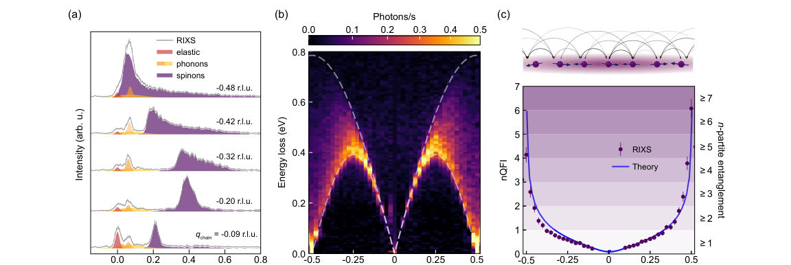
<figcaption class="paper-figure-caption"><b>Fig 3.</b> FIG. 3. Observation of 7-partite spin entanglement. (a) Experimental RIXS spectra at 35 K at selected momenta. Shaded areas correspond to the quasielastic, phonon, multiphonon, and two-spinon continuum contributions. The energy resolution is ∼35 meV. (b) Experimental RIXS intensity map as a function of momentum and energy loss, after subtracting elastic and phonon contributions and normalizing as described in the text. White dashed lines are the boundaries of the two- spinon continuum. (c) Normalized QFI (nQFI) extracted from the RIXS spectrum (dark purple), compared with theoretical expectations for an extended Hubbard chain of length L = 128 (blue). Error bars are obtained by propagating...</figcaption>
</figure>
<figure class="paper-figure-card">
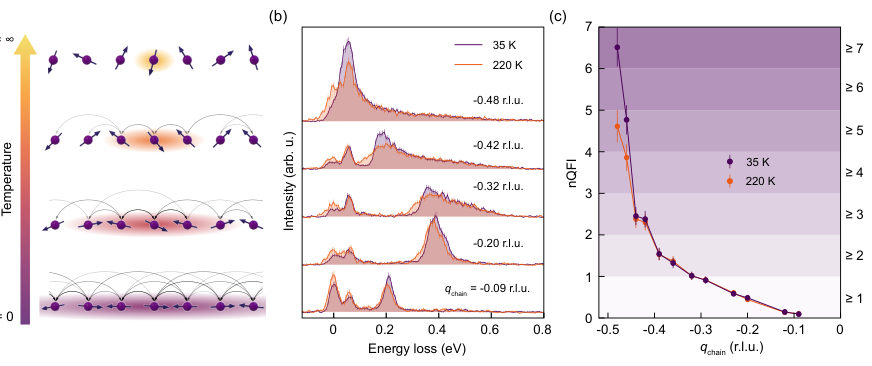
<figcaption class="paper-figure-caption"><b>Fig 4.</b> FIG. 4. Multipartite spin entanglement at high temperature. (a) Sketch of the multipartite spin entanglement as a function of temperature. While at low temperature spins are highly entangled, upon increasing temperature quantum correlations become weaker and shorter range. (b) Low-energy RIXS spectra at selected momenta at 35 K (purple) and 220 K (orange). Spectra are shifted for clarity. With increasing temperature, the spectra are modestly reshaped. (c) Normalized QFI (nQFI) extracted from the RIXS data at 35 K (purple circles) and 220 K (orange circles). Error bars are obtained by propagating the Poisson uncertainties on the integrated measured RIXS photon numbers. The normalized QFI is...</figcaption>
</figure>
<figure class="paper-figure-card">
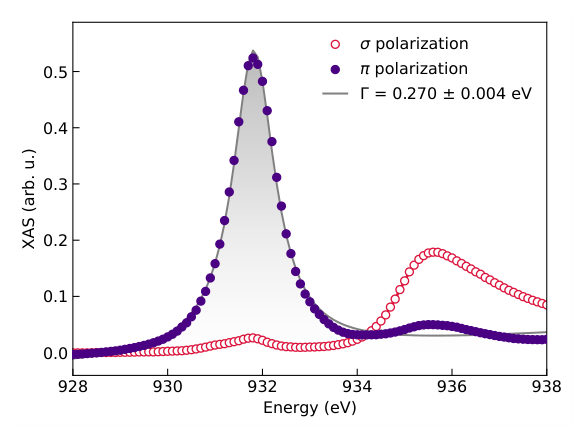
<figcaption class="paper-figure-caption"><b>Fig 5.</b> FIG. 1. XAS spectra measured with π-polarized (purple solid markers) and σ-polarized (red open markers) incident X-rays at an incident angle of θ = 63◦. A Lorentzian fit to the π-polarized spectrum (gray solid line) yields a half-width at half-maximum of Γ = 0.27 eV.</figcaption>
</figure>
</div>

<p><strong>Summary.</strong> This paper pioneers the use of Resonant Inelastic X-ray Scattering (RIXS) to experimentally probe multipartite spin entanglement in cuprate superconductors. By calculating the Quantum Fisher Information from measured spin fluctuations, the authors report detecting at least 7-partite entanglement in the 1D $   ext{Sr}_2   ext{CuO}_3$ model. This establishes RIXS as a powerful, non-invasive spectroscopic tool for characterizing complex quantum states in correlated electron systems.</p>
<p><strong>Why it may be interesting.</strong> This work bridges the gap between abstract quantum information theory (entanglement measures) and tangible solid-state spectroscopy (RIXS), providing a concrete experimental pathway to study quantum correlations in strongly correlated materials.</p>
<details>
<summary>Detailed structure</summary>
<p><strong>Main problem.</strong> The primary challenge is experimentally probing and quantifying multipartite spin entanglement within quantum materials, which has historically been very difficult.</p>
<p><strong>Main result.</strong> The authors report the detection of at least 7-partite spin entanglement in the model 1D cuprate $ ext{Sr}_2   ext{CuO}_3$, establishing RIXS as a viable spectroscopic tool for measuring many-body entanglement.</p>
<p><strong>Method.</strong> The study uses Resonant Inelastic X-ray Scattering (RIXS) to measure spin fluctuation spectra, from which the Quantum Fisher Information (QFI) is extracted as a witness for entanglement.</p>
<p><strong>Model / system.</strong> The system studied is the prototypical one-dimensional (1D) cuprate $   ext{Sr}_2   ext{CuO}_3$, modeled by the extended Hubbard model, which reduces to a Heisenberg model in the large-$U$ limit.</p>
<p><strong>Key observables.</strong> Quantum Fisher Information (QFI) density, entanglement depth, and the spin dynamical structure factor $S(q, \hbar\omega)$.</p>
<p><strong>Important parameters / regimes.</strong> The entanglement depth is shown to agree with Hubbard-model expectations and persists to elevated temperatures. Key parameters include $t_h \simeq 560 	ext{ meV}$ and $U = 8t_h$.</p>
<p><strong>Assumptions / limitations.</strong> The QFI extraction relies on projecting the measured RIXS cross section onto the appropriate spin excitation channel, and the analysis assumes certain sum rules hold for normalization.</p>
<p><strong>Figures summary.</strong> Figures illustrate the RIXS setup and the theoretical description of $ ext{Sr}_2   ext{CuO}_3$ as a 1D Hubbard model. Other figures detail two-spinon excitations, calculated RIXS intensities, and momentum-dependent QFI.</p>
<p><strong>Paper structure.</strong> The paper establishes the theoretical link between entanglement depth and QFI, details the methodology for extracting QFI from RIXS measurements by projecting the signal onto the spin structure factor, and finally presents the quantitative results showing high-order entanglement in the cuprate model.</p>
</details>
<details>
<summary>Abstract</summary>
<p>Quantum materials are believed to host highly entangled states of matter, but probing and quantifying such entanglement has long remained experimentally elusive. Here, we use resonant inelastic X-ray scattering (RIXS) as a probe of multipartite spin entanglement. By projecting the RIXS cross section onto the appropriate spin excitation channel, we show that the Quantum Fisher Information can be extracted directly from the measured spin fluctuation spectrum. We detect at least 7-partite spin entanglement in the model one-dimensional cuprate Sr$_2$CuO$_3$, revealing one of the largest entanglement depths yet reported in a solid. The observed entanglement depth agrees with Hubbard-model expectations and persists to elevated temperatures. Our results establish RIXS as an experimental probe of many-body spin entanglement and provide a platform for extensions to charge and orbital sectors and nonequilibrium settings.</p>
</details>
<p><sub><a href="#top">↑ back to top</a></sub></p>

<p><a id="paper-2609.07892"></a></p>
<h3 id="few-body-decay-dynamics-in-colloidal-cspbi3-quantum-dot-clusters"><a href="http://arxiv.org/abs/2609.07892v1">Few-Body Decay Dynamics in Colloidal CsPbI3 Quantum-Dot Clusters</a></h3>
<p><strong>Authors:</strong> Emma Daggett, Christian M. Lange, Nicholas Favate, Ankit Kundu, Ishita Agarwal, Arya D. Keni, Adhyyan S. Mansukhani, Christina W. Li, Libai Huang, Jonathan D. Hood<br>
<strong>Type:</strong> experiment · <strong>Category:</strong> other · <strong>PDF:</strong> <a href="https://arxiv.org/pdf/2609.07892v1">https://arxiv.org/pdf/2609.07892v1</a><br>
<strong>Analysis basis:</strong> full PDF text, analyzed in chunks
<strong>Topic relevance:</strong> 🔥 <code>correlated / nonlocal dissipation</code> <strong>4/5</strong> · 🔥 <code>quantum optics experiment</code> <strong>4/5</strong> · <code>Dicke superradiance</code> <strong>3/5</strong> · <code>Tavis-Cummings &amp; cavity-many-emitter</code> <strong>3/5</strong> · <code>analog quantum simulation</code> <strong>2/5</strong> · <code>methods for driven-dissipative</code> <strong>2/5</strong> · <code>quantum measurements</code> <strong>2/5</strong> · <code>superradiant laser</code> <strong>2/5</strong> · <code>Full counting statistics</code> <strong>1/5</strong> · <code>driven-dissipative phase transition</code> <strong>1/5</strong> · <code>free-space correlated emission</code> <strong>1/5</strong> · <code>interference shaping light</code> <strong>1/5</strong> · <code>non-equilibrium universality</code> <strong>1/5</strong></p>
<div class="figure-strip-hint">↔ Scroll figures horizontally</div>
<div class="paper-figures-scroll">
<figure class="paper-figure-card">
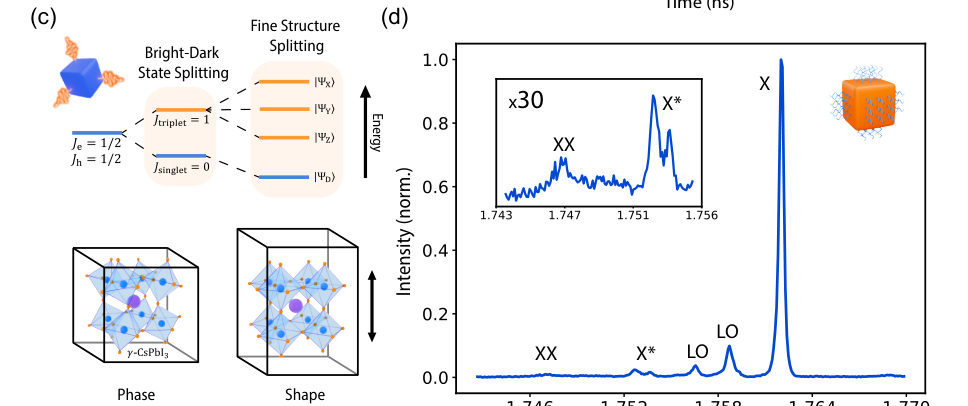
<figcaption class="paper-figure-caption"><b>Fig 1.</b> Figure 1: (a) TEM of CsPbI3 nanocrystals, with inset showing the unit structure of CsPbX3 per- ovskites. (b) Pulsed autocorrelation (g(2)(τ)) of a single quantum dot showing strong antibunching at τ = 0. (c) Exciton fine structure showing bright–dark splitting and further splitting of the bright triplet state. Symmetry breaking can arise from the crystalline phase (phase anisotropy, lower left) or distortion of the nanocrystal shape (shape anisotropy, lower right); orthorhombic γ −CsPbI3 is shown as an example of a lower-symmetry phase.1–3 (d) Emission spectrum of a single dot showing the exciton peak (X), two redshifted LO phonon replicas, positively and negatively charged trion peaks...</figcaption>
</figure>
<figure class="paper-figure-card">
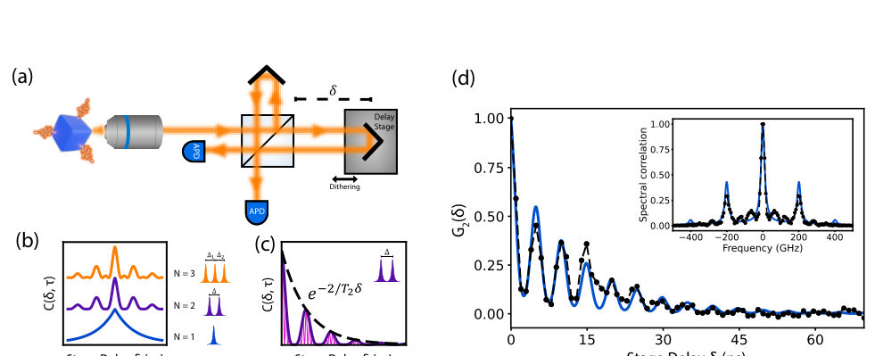
<figcaption class="paper-figure-caption"><b>Fig 2.</b> Figure 2: (a) Schematic of PCFS setup containing a modified Michelson interferometer where the path length of one arm is varied via a delay stage by δ. (b) Correlation function as a function of stage delay for one (blue), two (purple), and three (orange) interfering states. The number of states and relative detuning (∆) of the states determine the oscillation pattern in the PCFS signal. (c) Correlation function of two interfering states as a function of stage delay δ. The pink fringes show the high-frequency oscillations arising from scanning the path of the interferometer, the purple curve shows the oscillation after averaging over the fast fringes, and the dashed black curve shows the...</figcaption>
</figure>
<figure class="paper-figure-card">
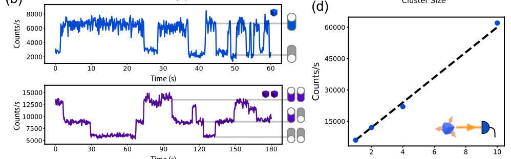
<figcaption class="paper-figure-caption"><b>Fig 3.</b> Figure 3: (a) Pulsed autocorrelation (g(2)) measurements of clusters with varying dot number N: a single quantum dot (blue, N = 1), a dimer (purple, N = 2), a small cluster (magenta, N ≈4), and a larger cluster (orange, N ≈10). Antibunching at zero delay decreases as dot number increases. (b) Blinking of one (blue) and two (purple) quantum dots. Binary blinking between “on” and “off” states is characteristic of emission from a single dot (top panel). In a dimer, blinking between three discrete states (“both on,” “one on/one off,” and “both off”) may be observed (bottom panel). (c) Observed (blue) and expected (dashed line) values for the integrated autocorrelation function g(2)[0] as a...</figcaption>
</figure>
<figure class="paper-figure-card">
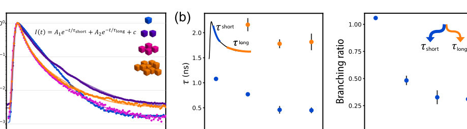
<figcaption class="paper-figure-caption"><b>Fig 4.</b> Figure 4: (a) Lifetime measurements on the same four clusters (N = 1, N = 2, N ≈4, and N ≈10). The single-dot decay is described by a single exponential, whereas the cluster decays require short and long components, τshort and τlong. Solid lines show the fits. (b) (left) The short and long lifetime components for one, two, few (N ≈4), and many (N ≈10) dot clusters. For the single dot, only the short component is shown because its decay is monoexponential. The right panel shows the integrated photon fraction in the short component; the single-dot fraction is unity because the decay is monoexponential, while the cluster values are obtained by integrating the components of the biexponential...</figcaption>
</figure>
</div>

<p><strong>Summary.</strong> The authors investigated how the optical decay dynamics of CsPbI3 quantum dots change as they self-assemble into clusters. By measuring photon correlations and decay lifetimes, they found that clusters exhibit a biexponential decay profile, confirming the emergence of collective optical behavior. This work establishes the quantum-dot cluster as a platform to study the transition from single-emitter to ensemble quantum dynamics.</p>
<p><strong>Why it may be interesting.</strong> This work provides experimental evidence of collective quantum optical behavior in solid-state nanocrystal ensembles, directly addressing how inter-particle coupling modifies fundamental decay processes, which is highly relevant to quantum light sources and cavity QED.</p>
<details>
<summary>Detailed structure</summary>
<p><strong>Main problem.</strong> The study characterizes the collective optical behavior and radiative decay dynamics of colloidal CsPbI3 quantum-dot clusters, bridging the gap between isolated emitters and ensemble limits.</p>
<p><strong>Main result.</strong> The decay dynamics transition from single-exponential (isolated dots) to biexponential (clusters $\ge 2$), indicating collective decay mechanisms are active even in the low-coherence regime.</p>
<p><strong>Method.</strong> The research employs photon autocorrelation, blinking statistics, and Photon-correlation Fourier spectroscopy (PCFS) to measure decay rates and coherence times.</p>
<p><strong>Model / system.</strong> The physical system is colloidal CsPbI3 perovskite quantum dots, studied from single emitters up to clusters of ten dots. The analysis compares measured decay traces to theoretical models of coupled two-level emitters.</p>
<p><strong>Key observables.</strong> Biexponential decay components ($  au_{    ext{short}},    au_{    ext{long}}$), photon-correlation function $g^{(2)}(	au)$, and coherence time $T_2$.</p>
<p><strong>Important parameters / regimes.</strong> Cluster size ($N=1$ to $N=10$), decay rates ($\Gamma_B, \Gamma_D$), and the ratio of fast-to-slow decay components ($\sim 1/N$).</p>
<p><strong>Assumptions / limitations.</strong> The analysis compares measurements to idealized models (e.g., independent excitation vs. coherent coupling) and notes that the long-lived component mechanism remains ambiguous.</p>
<p><strong>Figures summary.</strong> Figures illustrate TEM images, $g^{(2)}(	au)$ measurements confirming antibunching, and decay traces showing the transition from single to biexponential decay as the cluster size increases.</p>
<p><strong>Paper structure.</strong> The paper systematically characterizes the system using multiple diagnostics (photon statistics, coherence) before modeling the decay dynamics by comparing measurements against theoretical limits for single-emitter, two-emitter, and larger cluster behavior.</p>
</details>
<details>
<summary>Abstract</summary>
<p>Colloidal perovskite quantum dots combine bright emission with the ability to self- assemble into closely spaced structures, enabling radiative dynamics to be studied from isolated emitters to few-dot clusters. Here, we characterize CsPbI3 perovskite quan- tum dots from isolated emitters to self-assembled clusters containing up to ten dots. We estimate the number of emitters in each cluster using a combination of photon autocorrelation, blinking statistics, and emission brightness. Compared with isolated dots, clusters containing two or more emitters exhibit biexponential decay, with a short lifetime that decreases with emitter number and an additional long-lived component. Photon-correlation Fourier spectroscopy shows that the single-dot emission remains far from the lifetime-limited regime. Nevertheless, we observe emitter-number-dependent decay dynamics even in this low-coherence regime. Together, these measurements es- tablish self-assembled perovskite quantum-dot clusters as a platform for studying how collective optical behavior emerges between the single-emitter and ensemble limits</p>
</details>
<p><sub><a href="#top">↑ back to top</a></sub></p>

<p><a id="paper-2609.08050"></a></p>
<h3 id="quantum-magnonics-with-engineered-dissipative-and-coherent-interactions"><a href="http://arxiv.org/abs/2609.08050v1">Quantum magnonics with engineered dissipative and coherent interactions</a></h3>
<p><strong>Authors:</strong> Debsuvra Mukhopadhyay, Jayakrishnan M. P. Nair, Girish S. Agarwal<br>
<strong>Type:</strong> theory · <strong>Category:</strong> other · <strong>PDF:</strong> <a href="https://arxiv.org/pdf/2609.08050v1">https://arxiv.org/pdf/2609.08050v1</a><br>
<strong>Analysis basis:</strong> full PDF text, analyzed in chunks
<strong>Topic relevance:</strong> 🔥 <code>correlated / nonlocal dissipation</code> <strong>4/5</strong> · <code>Tavis-Cummings &amp; cavity-many-emitter</code> <strong>3/5</strong> · <code>analog quantum simulation</code> <strong>3/5</strong> · <code>driven-dissipative phase transition</code> <strong>3/5</strong> · <code>methods for driven-dissipative</code> <strong>3/5</strong> · <code>Keldysh / 2PI / non-Gaussian methods</code> <strong>2/5</strong> · <code>non-equilibrium universality</code> <strong>2/5</strong> · <code>Dicke superradiance</code> <strong>1/5</strong> · <code>quantum measurements</code> <strong>1/5</strong></p>
<div class="figure-strip-hint">↔ Scroll figures horizontally</div>
<div class="paper-figures-scroll">
<figure class="paper-figure-card">
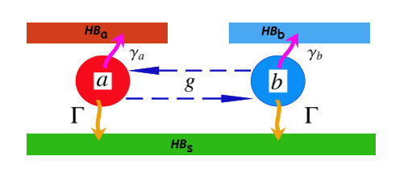
<figcaption class="paper-figure-caption"><b>Fig 1.</b> FIG. 1. Schematic of a generic dissipatively coupled two- mode system. Each mode interacts with its local environ- ment while simultaneously coupling to a common reservoir, which mediates an effective dissipative interaction between the modes through correlated decay. This generic configura- tion forms the basis for a variety of non-Hermitian phenom- ena, including level attraction, anti-PT symmetry, and EP physics. Adapted from Ref.12.</figcaption>
</figure>
<figure class="paper-figure-card">
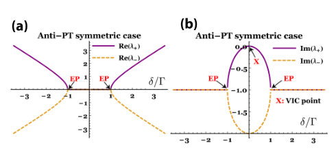
<figcaption class="paper-figure-caption"><b>Fig 2.</b> FIG. 2. Characteristic eigenspectrum of a dissipatively cou- pled anti-PT -symmetric system. (a) Real and (b) imaginary parts of the eigenvalues as functions of the relative detuning δ. The EPs at |δ| = Γ separate the spectrally split regime from the regime of frequency coalescence and linewidth bifur- cation into superradiant and subradiant branches. Adapted from Ref.12.</figcaption>
</figure>
<figure class="paper-figure-card">
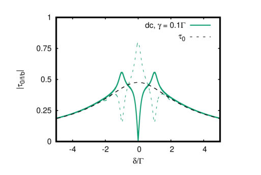
<figcaption class="paper-figure-caption"><b>Fig 3.</b> FIG. 3. Floquet-induced nonreciprocal transmission in dissi- patively coupled resonators. The forward (solid green) and backward (dashed green) transmission amplitudes are shown as functions of the normalized detuning δ/Γ, where δ = ω0−ωl and Γ is the dissipative coupling rate. The black dashed curve shows the transmission τ0 without modulation. The parame- ters are Ω= Γ, β = Γ, θ = π/2, and γ = 0.1Γ, wwhere Ωand β are the modulation frequency and amplitude, respectively, and θ is the relative phase between the frequency modulations of the two resonators. Adapted from Ref.33.</figcaption>
</figure>
<figure class="paper-figure-card">
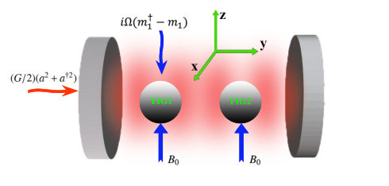
<figcaption class="paper-figure-caption"><b>Fig 4.</b> FIG. 4. Schematic of a parametrically driven cavity coupled to magnon modes. The cavity is driven by a two-photon para- metric pump, while the cavity field coherently couples to the magnetic excitations. Taken from Ref.19.</figcaption>
</figure>
</div>

<p><strong>Summary.</strong> This paper reviews the cutting edge of cavity magnonics, moving beyond simple coherent coupling to harness engineered dissipation and Floquet driving. It shows how these techniques allow for the creation of long-lived quantum modes and enable advanced quantum applications like enhanced sensing and magnon squeezing. The platform is established as a versatile tool for hybrid quantum technologies.</p>
<p><strong>Why it may be interesting.</strong> This work is highly relevant to AMO physics as it merges concepts from cavity QED (cavity coupling), open quantum systems (dissipation, anti-PT symmetry), and quantum optics (squeezing, parametric driving) within a solid-state platform.</p>
<details>
<summary>Detailed structure</summary>
<p><strong>Main problem.</strong> The research aims to advance cavity magnonics beyond simple coherent spin-photon coupling by engineering complex interactions, including dissipation, Floquet dynamics, and quantum fluctuations.</p>
<p><strong>Main result.</strong> The work demonstrates that engineered dissipation, particularly through anti-PT symmetry, enables long-lived subradiant modes and enhances parameter sensitivity for sensing applications.</p>
<p><strong>Method.</strong> The analysis employs theoretical modeling using effective Hamiltonians, Langevin equations for quadrature dynamics, and concepts from non-Hermitian physics to describe the coupled magnon-photon system.</p>
<p><strong>Model / system.</strong> The primary system is cavity magnonics, involving low-loss ferrimagnets (like YIG) coupled to microwave cavities. Models include effective two-mode Hamiltonians for anti-PT systems and fluctuation Hamiltonians for squeezing analysis.</p>
<p><strong>Key observables.</strong> Long-lived subradiant excitations, Quantum Fisher Information (QFI), magnon squeezing variance ($\Delta X_M^2$), and nonreciprocal transmission.</p>
<p><strong>Important parameters / regimes.</strong> Dissipative coupling strength ($\Gamma$), detuning ($\delta$), parametric drive strength ($G_p$), and thermal occupation ($ar{n}_m$).</p>
<p><strong>Assumptions / limitations.</strong> The analysis often assumes Markovian input noises and relies on deriving effective Hamiltonians under specific limits (e.g., bad-cavity limit).</p>
<p><strong>Figures summary.</strong> Figures illustrate the characteristic eigenspectrum of anti-PT systems showing linewidth splitting, and show Floquet-induced nonreciprocal transmission profiles.</p>
<p><strong>Paper structure.</strong> The paper progresses from reviewing the shift towards engineered dissipation and anti-PT symmetry, to detailing the use of Floquet engineering for nonreciprocity, and finally analyzing advanced quantum state generation like magnon squeezing via parametric driving.</p>
</details>
<details>
<summary>Abstract</summary>
<p>Cavity magnonics is moving beyond the conventional paradigm of coherent spin--photon hybridization toward the controlled engineering of dissipative and coherent interactions, Floquet dynamics, and quantum fluctuations. This Perspective examines how these ingredients reshape collective dynamics and open new avenues for quantum state engineering, transport, and sensing. We discuss the role of dissipative coupling and anti-$\mathcal{PT}$ symmetry in enabling long-lived collective modes and enhanced spectral response, and highlight Floquet engineering as a means of engineering nonreciprocal transport and phase-controlled interactions. We then review recent progress in quantum magnonics, ranging from squeezed and entangled magnon states, including the squeezing of thermal magnons, to prospective schemes for preparing magnonic Schrödinger-cat states. We also discuss how parametric driving and active gain strongly modify hybrid susceptibilities and amplify magnon--photon response. These advances expand the scope of cavity magnonics beyond conventional polariton physics, establishing it as a versatile platform for sensing, transduction, spin transport, and hybrid quantum technologies.</p>
</details>
<p><sub><a href="#top">↑ back to top</a></sub></p>

<p><a id="paper-2609.07967"></a></p>
<h3 id="limit-cycles-in-a-photonic-dimer-with-tuneable-non-hermitian-interactions"><a href="http://arxiv.org/abs/2609.07967v1">Limit Cycles in a Photonic Dimer with Tuneable Non-Hermitian Interactions</a></h3>
<p><strong>Authors:</strong> Kevin J. H. Peters, Peter Schnorrenberg, Daniel Ehrmanntraut, Nikolas Longen, Julian Schmitt<br>
<strong>Type:</strong> both · <strong>Category:</strong> other · <strong>PDF:</strong> <a href="https://arxiv.org/pdf/2609.07967v1">https://arxiv.org/pdf/2609.07967v1</a><br>
<strong>Analysis basis:</strong> full PDF text, analyzed in chunks
<strong>Topic relevance:</strong> 🔥 <code>driven-dissipative phase transition</code> <strong>4/5</strong> · <code>analog quantum simulation</code> <strong>3/5</strong> · <code>correlated / nonlocal dissipation</code> <strong>3/5</strong> · <code>methods for driven-dissipative</code> <strong>3/5</strong> · <code>non-equilibrium universality</code> <strong>3/5</strong> · <code>quantum optics experiment</code> <strong>3/5</strong> · <code>Keldysh / 2PI / non-Gaussian methods</code> <strong>1/5</strong> · <code>Tavis-Cummings &amp; cavity-many-emitter</code> <strong>1/5</strong></p>
<div class="figure-strip-hint">↔ Scroll figures horizontally</div>
<div class="paper-figures-scroll">
<figure class="paper-figure-card">
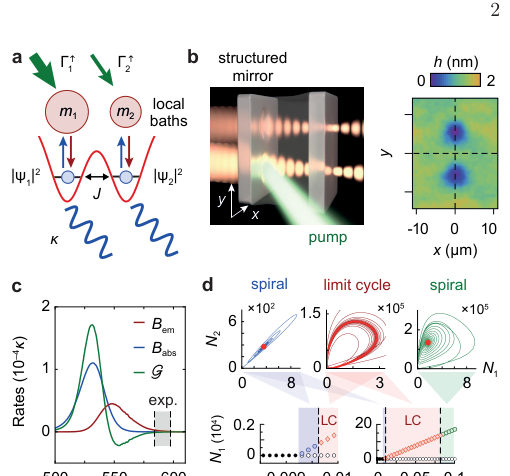
<figcaption class="paper-figure-caption"><b>Fig 1.</b> Fig. 1 | Experimental scheme. (a) Driven-dissipative photonic dimer model consisting of two tunnel-coupled con- densate states ψ1,2 with effective interactions mediated by coupling to local molecule baths m1,2. (b) Dye-filled opti- cal microcavity (left) and height profile of structured mir- ror (right). (c) Measured wavelength-dependent absorption (blue), emission (red) spectra, and calculated effective inter- action strength (green) for Γ↑ 1 = 2π × 200 MHz. The studied experimental range is shaded. (d) Calculated steady-state photon numbers versus pump rate Γ↑ 1 (bottom panel). Black circles: stable fixed points below condensation; blue/green circles: stable fixed points above...</figcaption>
</figure>
<figure class="paper-figure-card">
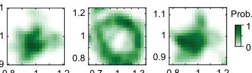
<figcaption class="paper-figure-caption"><b>Fig 2.</b> Fig. 2 | Observation of limit cycles in double well. (a) Top: Sketch of the experimental detuning evolution ∆(t). Starting from an initially blue-detuned double well (t &lt; 250 ns), the two sites are shifted on resonance ∆= 0, be- fore entering the red-detuned regime (t &gt; 250 ns). Middle and bottom: Single-shot measurement of the normalised photon numbers at constant pump power P1 = 3.42 µW and cutoff λc = 588 nm. Red (blue) trace shows the emission from the pumped (unpumped) well N1(2)/ ¯ N1(2). (b) Zooms into the regions indicated in (a). While for |∆| &gt; 0, a steady-state emission without periodic features is observed, limit cycle dy- namics are observed near ∆= 0. (c) The corresponding...</figcaption>
</figure>
<figure class="paper-figure-card">
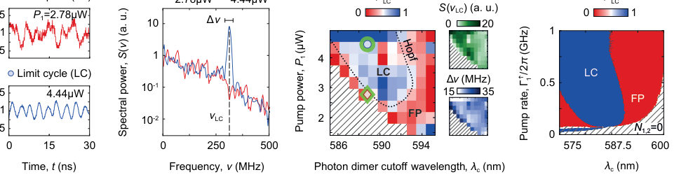
<figcaption class="paper-figure-caption"><b>Fig 3.</b> Fig. 3 | Phase diagram of the nonlinear photonic dimer dynamics. (a) Time traces of the normalised population in the left well N1/ ¯ N1 for a stable fixed point (top) and limit cycle (bottom) for two pump powers at resonance ∆= 0. The noise levels differ due to different ¯ N1. (b) Corresponding power spectral densities S(ν). For the limit cycle, a peak at frequency νLC = 313.1(2) MHz with width ∆ν = 13.6(5) MHz (FWHM) is visible. (c) Limit cycle probability PLC (main panel), average power spectral density S(νLC) at the limit cycle frequency (top right, green), and ∆ν (bottom right, blue) versus cutoff wavelength and pump power. Limit cycles occur in an island (blue region) well separated...</figcaption>
</figure>
<figure class="paper-figure-card">
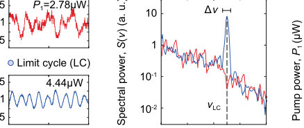
<figcaption class="paper-figure-caption"><b>Fig 4.</b> Figure 2(b) shows three time windows illustrating the system’s evolution. Before reaching resonance ∆&gt; 0 (left panel), the system is in a stationary state, with the emitted photon numbers relaxing to constants. The corresponding (N1-N2)-histogram in Fig. 2(c) is concen- trated near a single point, consistent with a single steady state. Near resonance ∆= 0 (middle panels), the pho- ton numbers exhibit persistent oscillations in time with νLC,1 = 283(3) MHz and νLC,2 = 281(2) MHz. The his- togram forms a ring-shaped distribution, reflecting the closed orbit associated with a limit cycle. After the reso- nance is crossed ∆&lt; 0 (right panels), the system returns to a stationary state indicated...</figcaption>
</figure>
</div>

<p><strong>Summary.</strong> This paper experimentally proves that purely dissipative, non-Hermitian interactions can generate rich nonlinear dynamics, like limit-cycle oscillations, in a photonic dimer system. By coupling the light fields to molecular reservoirs in a microcavity, the authors control the effective dissipation strength. This work validates controlled dissipation as a powerful mechanism for studying non-equilibrium many-body physics.</p>
<p><strong>Why it may be interesting.</strong> This work provides a concrete experimental platform demonstrating that non-Hermitian physics, traditionally associated with open quantum systems, can be a primary mechanism for organizing complex, nonlinear collective dynamics in quantum optics.</p>
<details>
<summary>Detailed structure</summary>
<p><strong>Main problem.</strong> The study investigates whether purely dissipative (non-Hermitian) interactions can generate rich nonlinear dynamics, such as limit-cycle oscillations, comparable to those from conservative interactions.</p>
<p><strong>Main result.</strong> The authors experimentally demonstrate that limit-cycle oscillations, indicative of complex nonlinear dynamics, can be stabilized purely by tuning non-Hermitian interactions in a photonic dimer system.</p>
<p><strong>Method.</strong> The research combines theoretical modeling using Langevin equations and adiabatic elimination with experimental realization in a dye-filled double-well microcavity.</p>
<p><strong>Model / system.</strong> The system is a photonic dimer (two coupled condensates of light) in a microcavity, where effective dissipative interactions arise from local coupling to molecular reservoirs. The dynamics are governed by non-Hermitian terms derived from the reservoir coupling.</p>
<p><strong>Key observables.</strong> Limit-cycle oscillations (LC), stable fixed points (FP), Hopf bifurcations, hysteresis, and excitability, observed via time traces and power spectral densities.</p>
<p><strong>Important parameters / regimes.</strong> Tunable non-Hermitian interaction strength ($G_j$), pump rate ($\Gamma_{\uparrow 1}$), and cavity length ($D_0$) which sets the cutoff wavelength ($\lambda_c$).</p>
<p><strong>Assumptions / limitations.</strong> Adiabatic elimination of molecular dynamics ($\dot{m}_j \simeq 0$) is used to derive the effective non-Hermitian interaction term.</p>
<p><strong>Figures summary.</strong> Figures illustrate the schematic of the model, the microcavity setup, the mapping of the dynamical phase diagram showing LC regions vs. fixed points, and time traces/histograms confirming the onset of limit cycles via Hopf bifurcations.</p>
<p><strong>Paper structure.</strong> The paper establishes the theoretical framework by modeling the system with reservoir coupling, derives the effective non-Hermitian Hamiltonian, and then presents experimental measurements mapping the dynamical phase diagram by tuning interaction strengths to observe bifurcations between stable fixed points and limit cycles.</p>
</details>
<details>
<summary>Abstract</summary>
<p>Interactions govern the emergence of collective behaviour in classical and quantum many-body systems. While conservative interactions are well known to generate nonlinear phenomena ranging from self-trapping to pattern formation, it remains largely unexplored whether purely dissipative -- i.e., non-Hermitian -- interactions can give rise to similarly rich dynamics and nontrivial system states. Here, we experimentally realise tuneable non-Hermitian interactions in two coupled condensates of light confined within a dye-filled double-well microcavity. Local coupling to molecular reservoirs generates the effective dissipative photon interactions. We show that the interplay between coherent tunnelling and interactions stabilises limit-cycle oscillations, a hallmark of nonlinear dynamics traditionally associated with Hermitian nonlinearities. By tuning the reservoir coupling, we map out the dynamical phase diagram comprising stable fixed points and limit cycles, thereby demonstrating direct control over the interaction strength. Our experimentally validated model reveals both supercritical and subcritical Hopf bifurcations, giving rise to hysteresis, bistability and excitability. These results validate dissipative interactions as a mechanism for organising collective nonlinear dynamics in driven-dissipative systems and pave the way towards exploring nonequilibrium many-body physics through controlled dissipation.</p>
</details>
<p><sub><a href="#top">↑ back to top</a></sub></p>

<p><a id="paper-2609.08388"></a></p>
<h3 id="dynamics-of-entanglement-in-non-hermitian-system-of-nonreciprocal-coupling"><a href="http://arxiv.org/abs/2609.08388v1">Dynamics of entanglement in non-Hermitian system of nonreciprocal coupling</a></h3>
<p><strong>Authors:</strong> Jiguo Wu, Shaojie Yang, Xiong Liu, Zhibo Jiang, Zhiyou Zhang, Rongchun Ge<br>
<strong>Type:</strong> theory · <strong>Category:</strong> other · <strong>PDF:</strong> <a href="https://arxiv.org/pdf/2609.08388v1">https://arxiv.org/pdf/2609.08388v1</a><br>
<strong>Analysis basis:</strong> full PDF text, analyzed in chunks
<strong>Topic relevance:</strong> 🔥 <code>driven-dissipative phase transition</code> <strong>4/5</strong> · <code>Tavis-Cummings &amp; cavity-many-emitter</code> <strong>3/5</strong> · <code>analog quantum simulation</code> <strong>3/5</strong> · <code>correlated / nonlocal dissipation</code> <strong>3/5</strong> · <code>non-equilibrium universality</code> <strong>3/5</strong> · <code>methods for driven-dissipative</code> <strong>2/5</strong> · <code>Rydberg arrays</code> <strong>1/5</strong></p>
<div class="figure-strip-hint">↔ Scroll figures horizontally</div>
<div class="paper-figures-scroll">
<figure class="paper-figure-card">
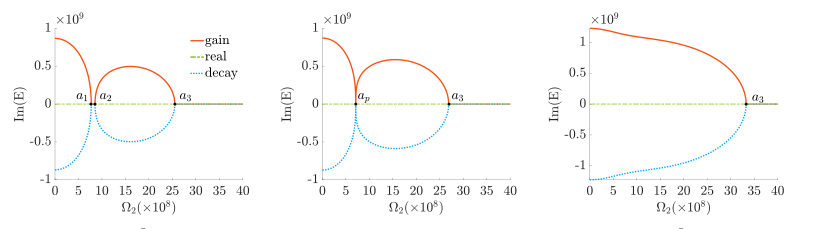
<figcaption class="paper-figure-caption"><b>Fig 1.</b> FIG. 1. NH energy energy level spectra versus Ω2 for different value of imaginary coupling. Here we set wA = 5 × 109 Hz, wB = 6×109 Hz, wC = 7×109 Hz, e = 1×109 Hz. (a), (d) Real and imaginary parts of the eigenenergies for a small imaginary coupling strength (Ω1 = 6 × 108 Hz). Three EP2 appear at Ω2 = a1, a2, a3, respectively where pairs of the eigenstates coalesce pairwise. (b),(e)Real and imaginary parts of the eigenenergies at the critical imaginary coupling strength Ωp. The EP2 at a1 and a2 coalesce into a single single EP3 at Ωp, which is 3rd-order degenerated. (c),(f) When imaginary coupling is larger than Ωp, there is no EP at Ω2 &lt; a3 anymore.</figcaption>
</figure>
<figure class="paper-figure-card">
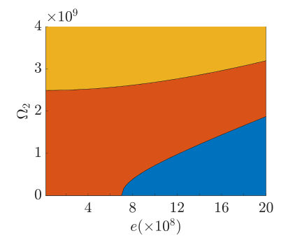
<figcaption class="paper-figure-caption"><b>Fig 2.</b> FIG. 2. Phase diagram of EP2 and EP3. The upper and lower boundary curves correspond to second-order and third- order EPs, respectively. The dynamical evolution in yellow region corresponds to symmetry-unbroken phase, while the other two regions represent distinct symmetry-broken phases connected by a third-order exceptional phase transition.</figcaption>
</figure>
<figure class="paper-figure-card">
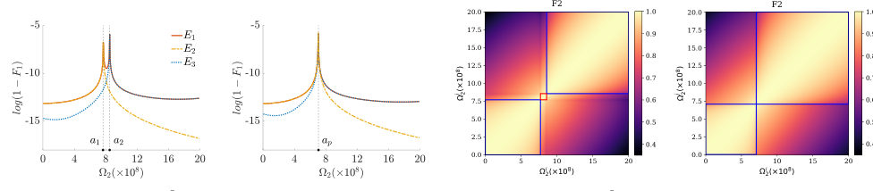
<figcaption class="paper-figure-caption"><b>Fig 3.</b> FIG. 3. Fidelities of the eigenstates in the NH three-level system. With varying coupling coefficient Ω2, we construct the fidelity in two kinds of definitions. (a)-(b) First kind of fidelity with δΩ2 = 106Hz. Red, yellow and blue curves represent fidelities of the three eigenstates fidelity. (c)-(d) Second kind of fidelity. Light yellow indicates high fidelity region while the dark purple indicates low fidelity. The squares with blue outlines are the calculated symmetry-broken phase region and the square with red outlines is the symmetry-unbroken phase.</figcaption>
</figure>
<figure class="paper-figure-card">
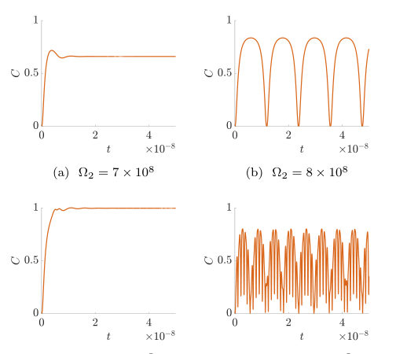
<figcaption class="paper-figure-caption"><b>Fig 4.</b> FIG. 4. Temporal evolution of concurrence for Ω1 &lt; Ωp. (a),(c) The concurrence relaxes to a constant value Css at late times, corresponding to the dynamical symmetry-broken phase. (b),(d) The concurrence exhibits persistent Rabi-like oscillatory dynamics over time, corresponding to the dynam- ical symmetry-unbroken phase.</figcaption>
</figure>
<figure class="paper-figure-card">
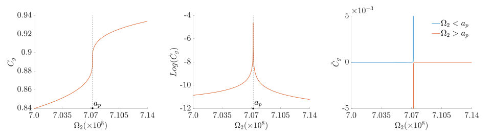
<figcaption class="paper-figure-caption"><b>Fig 5.</b> FIG. 5. Entanglement-based characterization of third-order EP phase transition point (Ω1 = Ωp). (a)Gain-state concurrence Cg as a function ofΩ2. It is qualitatively different with second-order EP phase transition. (b)Logarithm of the absolute first derivative of the concurrence Log( ˙Cg) versus Ω2. When phase transition occurs, the first derivative exhibits a steep peak near the EP, and it is continuous at the peak. (c) ¨Cg −Ω2. It has a non-zero change at the phase transition point.</figcaption>
</figure>
</div>

<p><strong>Summary.</strong> This paper explores non-Hermitian quantum systems with nonreciprocal coupling to study the role of higher-order Exceptional Points ($  ext{EP}_3$). The authors demonstrate that the interaction between $ ext{EP}_2$ and $    ext{EP}_3$ defines a continuous quantum phase transition that dictates the system's entanglement dynamics. The findings establish a new theoretical framework for understanding quantum physics governed by higher-order degeneracies in engineered optical arrays.</p>
<p><strong>Why it may be interesting.</strong> This work directly addresses the advanced physics of higher-order degeneracies in non-Hermitian systems, linking topological features (EPs) to fundamental quantum properties like entanglement dynamics and continuous phase transitions, which is highly relevant to quantum optics and open quantum systems.</p>
<details>
<summary>Detailed structure</summary>
<p><strong>Main problem.</strong> The study investigates the quantum features of non-Hermitian (NH) systems with nonreciprocal coupling, specifically focusing on the interactions between different orders of Exceptional Points (EPs) and their effect on entanglement dynamics.</p>
<p><strong>Main result.</strong> The system exhibits both second- and third-order EPs, and the $    ext{EP}_3$ transition governs a continuous quantum phase transition between distinct symmetry-broken dynamical phases.</p>
<p><strong>Method.</strong> The analysis employs numerical methods to track energy spectra, calculate entanglement measures like concurrence, and analyze phase transitions using fidelity and second derivatives of concurrence.</p>
<p><strong>Model / system.</strong> The model is a three-level quantum system (TLS) realized with three coupled cavities (A, B, C) exhibiting nonreciprocal coupling, which is suggested to be experimentally realizable using a 2D reconfigurable NH gauged laser array.</p>
<p><strong>Key observables.</strong> Exceptional Points ($  ext{EP}_2$, $   ext{EP}_3$), entanglement (concurrence $C_{ij}$), quantum fidelity ($F_1, F_2$), and the sign of a continuous entanglement phase transition.</p>
<p><strong>Important parameters / regimes.</strong> Nonreciprocal coupling strengths ($\Omega_1, \Omega_2$), onsite frequencies ($w_i$), and the critical coupling strength ($\Omega_p$).</p>
<p><strong>Assumptions / limitations.</strong> The analysis utilizes rate equations for lasing modes in some contexts, and the study focuses on the idealized Hamiltonian structure.</p>
<p><strong>Figures summary.</strong> Figures illustrate the energy level spectra showing $  ext{EP}_2$ coalescence into $   ext{EP}_3$, phase diagrams mapping three distinct dynamical regimes, and concurrence dynamics confirming the continuous nature of the $ ext{EP}_3$ transition.</p>
<p><strong>Paper structure.</strong> The paper systematically analyzes the Hamiltonian, characterizes the existence and coalescence of $    ext{EP}_2$ and $    ext{EP}_3$ points in the parameter space, and then uses entanglement measures (concurrence) and fidelity to map out the resulting dynamical phase diagram.</p>
</details>
<details>
<summary>Abstract</summary>
<p>The exploration of the effect of non-Hermitian (NH) in quantum systems is gaining renewed momentum as a result of the recent progress in experiments. It has been indicated that the ability to engineer the orders of exceptional points (EPs) can be fundamental to its applications in quantum control, such as accelerating entanglement generation; however, an initial survey of the interactions between different orders of EPs is still missing. In this work, we try to partially address this issue by employing a non-reciprocally coupled cavity system which can be experimentally realizable with a two-dimensional reconfigurable NH gauged laser array. With deliberate design, our systems display both second and third orders of EPs. The sign of a novel, purely quantum continuous entanglement phase transition is observed, which reveals how multi-EP interactions alter entanglement dynamics across different regimes while maintaining accelerated generation. Our findings reveil the genuinely quantum NH physics of higher-order EPs, which has opened up a new avenue for future investigations of the higher-order degeneracy application and the dynamic phase transitions of quantum systems.</p>
</details>
<p><sub><a href="#top">↑ back to top</a></sub></p>

<p><a id="paper-2609.08655"></a></p>
<h3 id="exciton-polariton-condensates-in-epsilon-near-zero-cavities"><a href="http://arxiv.org/abs/2609.08655v1">Exciton-polariton condensates in epsilon-near-zero cavities</a></h3>
<p><strong>Authors:</strong> Ege Özgün<br>
<strong>Type:</strong> theory · <strong>Category:</strong> quantum gases · <strong>PDF:</strong> <a href="https://arxiv.org/pdf/2609.08655v1">https://arxiv.org/pdf/2609.08655v1</a><br>
<strong>Analysis basis:</strong> full PDF text, analyzed in chunks
<strong>Topic relevance:</strong> 🔥 <code>driven-dissipative phase transition</code> <strong>4/5</strong> · 🔥 <code>methods for driven-dissipative</code> <strong>4/5</strong> · <code>analog quantum simulation</code> <strong>3/5</strong> · <code>Keldysh / 2PI / non-Gaussian methods</code> <strong>2/5</strong> · <code>non-equilibrium universality</code> <strong>2/5</strong> · <code>Tavis-Cummings &amp; cavity-many-emitter</code> <strong>1/5</strong> · <code>correlated / nonlocal dissipation</code> <strong>1/5</strong> · <code>quantum measurements</code> <strong>1/5</strong></p>
<div class="figure-strip-hint">↔ Scroll figures horizontally</div>
<div class="paper-figures-scroll">
<figure class="paper-figure-card">
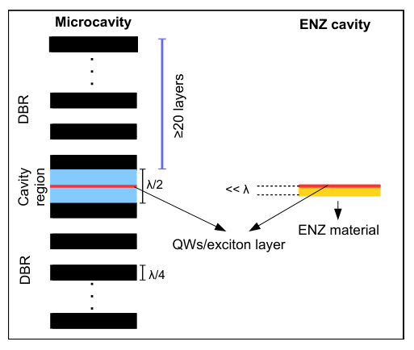
<figcaption class="paper-figure-caption"><b>Fig 1.</b> FIG. 1. Comparison of DBR microcavities and the suggested ENZ cavity.</figcaption>
</figure>
<figure class="paper-figure-card">
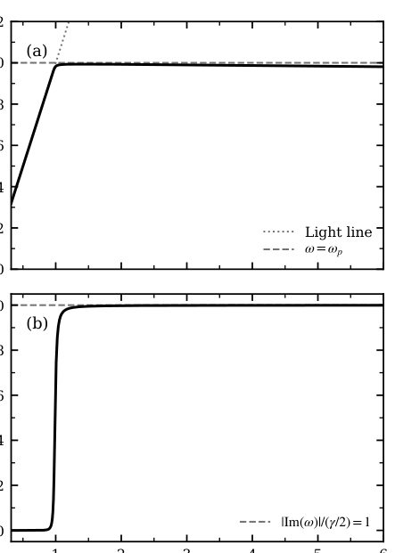
<figcaption class="paper-figure-caption"><b>Fig 2.</b> FIG. 2. (a) Dispersion of the ENZ mode and (b) the losses for the ultrathin metal film.</figcaption>
</figure>
<figure class="paper-figure-card">
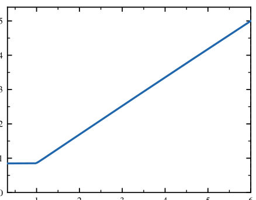
<figcaption class="paper-figure-caption"><b>Fig 3.</b> FIG. 3. Normalized light-matter coupling strength g(k)/ωp obtained from the ENZ electric-field amplitude.</figcaption>
</figure>
<figure class="paper-figure-card">
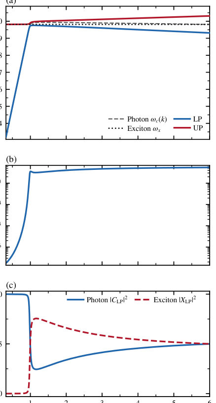
<figcaption class="paper-figure-caption"><b>Fig 4.</b> FIG. 4. (a) Polariton bands, (b) LP losses (log scale), (c) Excitonic and photonic content for LP.</figcaption>
</figure>
<figure class="paper-figure-card">
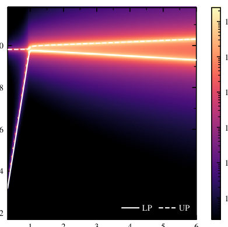
<figcaption class="paper-figure-caption"><b>Fig 5.</b> FIG. 5. Emission map for the polariton modes (in log scale) where eSaa(k, ω) = ωpSaa(k, ω).</figcaption>
</figure>
</div>

<p><strong>Summary.</strong> This theoretical study proposes using epsilon-near-zero (ENZ) artificial cavities as a superior platform for achieving exciton-polariton condensation compared to traditional DBR cavities. By modeling the system dynamics with a master equation and applying mean-field theory, the authors predict the critical pumping threshold and identify the specific momentum mode most likely to condense.</p>
<p><strong>Why it may be interesting.</strong> This work bridges quantum optics, condensed matter physics, and non-equilibrium dynamics by applying advanced open quantum system techniques (Lindblad equation, mean-field theory) to predict a macroscopic quantum phenomenon (Bose-Einstein condensation) in a novel solid-state platform.</p>
<details>
<summary>Detailed structure</summary>
<p><strong>Main problem.</strong> The paper theoretically investigates an alternative platform using epsilon-near-zero (ENZ) artificial cavities to achieve exciton-polariton condensation (PC), comparing it against conventional DBR microcavities.</p>
<p><strong>Main result.</strong> The ENZ platform is shown to be a viable alternative due to its smaller physical size, and the analysis identifies a specific momentum mode ($k_0 = 1.149$) expected to undergo condensation with a calculated pump threshold.</p>
<p><strong>Method.</strong> The study employs a driven-dissipative reservoir approach, utilizing the Lindblad master equation and subsequent mean-field theory to calculate the condensation threshold.</p>
<p><strong>Model / system.</strong> The system involves exciton-polaritons confined in an ENZ cavity, modeled using an effective non-Hermitian Hamiltonian and governed by a master equation incorporating cavity loss, excitonic loss, and pumping.</p>
<p><strong>Key observables.</strong> Pump threshold ($P_{th}$), polariton dispersion, and the relative photonic/excitonic content of the lower polariton (LP) mode.</p>
<p><strong>Important parameters / regimes.</strong> The critical momentum $k_0 = 1.149$, the excitonic density ($
ho_X \gtrsim 10^{11}    ext{ cm}^{-2}$), and the effective loss rates ($\Gamma_{eff}^{LP}$).</p>
<p><strong>Assumptions / limitations.</strong> The analysis relies on mean-field theory (MFT) and assumes the validity of the reservoir approach, which may break down at lower excitonic densities.</p>
<p><strong>Figures summary.</strong> Figures likely show the polariton dispersion relation (non-quadratic due to ENZ flatness), the calculated emission spectrum, and the comparison of condensation thresholds between ENZ and DBR cavities.</p>
<p><strong>Paper structure.</strong> The paper first establishes the ENZ cavity platform and its properties, then develops the master equation and mean-field theory for condensation, and finally calculates the minimum pump threshold to predict the condensing mode.</p>
</details>
<details>
<summary>Abstract</summary>
<p>We propose an epsilon-near-zero (ENZ) artificial cavity that can enhance light-matter coupling around the ENZ frequency and theoretically show the possibility of exciton-polariton condensation in the suggested platform. By using a rate equation model based on the driven-dissipative reservoir approach, we calculate the pump threshold for condensation and then compare the suggested platform's advantages/disadvantages with distributed Bragg reflector cavities. We also discuss the validity of the mean field theory within our model.</p>
</details>
<p><sub><a href="#top">↑ back to top</a></sub></p>

<p><a id="paper-2609.09139"></a></p>
<h3 id="large-scale-dynamics-of-integrable-quenches"><a href="http://arxiv.org/abs/2609.09139v1">Large-scale dynamics of integrable quenches</a></h3>
<p><strong>Authors:</strong> David X. Horvath, Bruno Bertini<br>
<strong>Type:</strong> theory · <strong>Category:</strong> statistical mechanics · <strong>PDF:</strong> <a href="https://arxiv.org/pdf/2609.09139v1">https://arxiv.org/pdf/2609.09139v1</a><br>
<strong>Analysis basis:</strong> full PDF text, analyzed in chunks
<strong>Topic relevance:</strong> 🔥 <code>non-equilibrium universality</code> <strong>4/5</strong> · <code>Full counting statistics</code> <strong>3/5</strong> · <code>Keldysh / 2PI / non-Gaussian methods</code> <strong>3/5</strong> · <code>analog quantum simulation</code> <strong>3/5</strong> · <code>methods for driven-dissipative</code> <strong>2/5</strong> · <code>scars &amp; prethermalization</code> <strong>2/5</strong> · <code>quantum measurements</code> <strong>1/5</strong></p>
<div class="figure-strip-hint">↔ Scroll figures horizontally</div>
<div class="paper-figures-scroll">
<figure class="paper-figure-card">
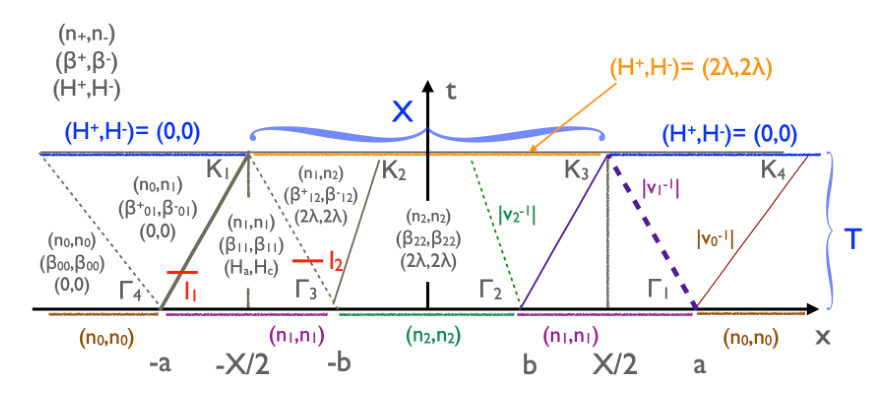
<figcaption class="paper-figure-caption"><b>Fig 1.</b> Figure 1. Illustration of the consistent solution with 3-plateau piece-wise constant initial filling functions in the small-ζ (T/X) regime. The dashed lines correspond to characteristic curves that describe the propagation of the contact discontinuities to the left direction (K1, K2, K3, and K4). The solid lines correspond to characteristic curves that describe the propagation of the contact discontinuities to the right direction (Γ1, Γ2, Γ3, and Γ4). The slopes of these curves equal the inverse (effective) velocities; their absolute values are the same for lines with the same colour. In the left half, within each polygon, we showed the values of the various hydrodynamic fields in...</figcaption>
</figure>
<figure class="paper-figure-card">
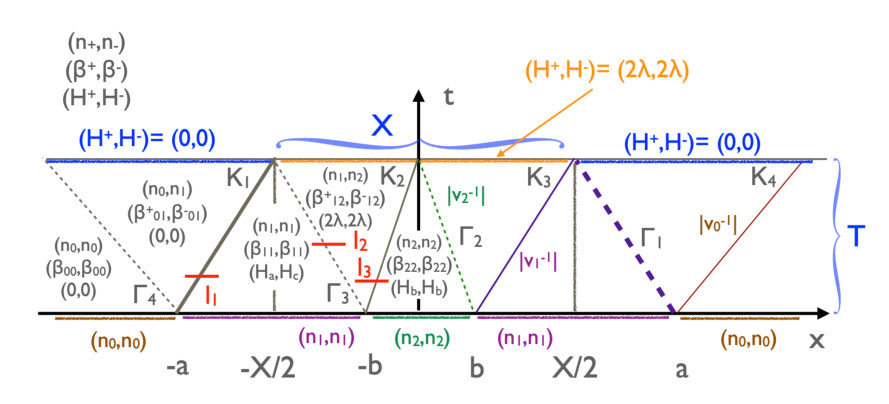
<figcaption class="paper-figure-caption"><b>Fig 2.</b> Figure 2. Illustration of the consistent solution with a 3-plateau piece-wise constant initial filling functions when T/X = ζ = ζ1. The dashed lines correspond to characteristic curves that describe the propagation of the contact discontinuities to the left direction (K1, K2, K3, and K4). The solid lines correspond to characteristic curves that describe the propagation of the contact discontinuities to the right direction (Γ1, Γ2, Γ3, and Γ4). The slopes of these curves equal the inverse (effective) velocities; their absolute values are the same for lines with the same colour. In the left half, within each polygon, we showed the values of the various hydrodynamic fields in parentheses (n+,...</figcaption>
</figure>
<figure class="paper-figure-card">
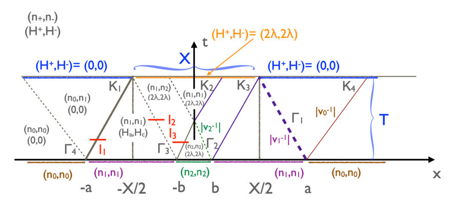
<figcaption class="paper-figure-caption"><b>Fig 3.</b> Figure 3. Illustration of the consistent solution with a 3-plateau piece-wise constant initial filling functions when ζ2 &gt; ζ = T/X &gt; ζ1. The dashed lines correspond to characteristic curves that describe the propagation of the contact discontinuities to the left direction (K1, K2, K3, and K4). The solid lines correspond to characteristic curves that describe the propagation of the contact discontinuities to the right direction (Γ1, Γ2, Γ3, and Γ4). The slopes of these curves equal the inverse (effective) velocities; their absolute values are the same for lines with the same colour. In the left half, within each polygon, we showed the values of the various hydrodynamic fields in parentheses...</figcaption>
</figure>
<figure class="paper-figure-card">
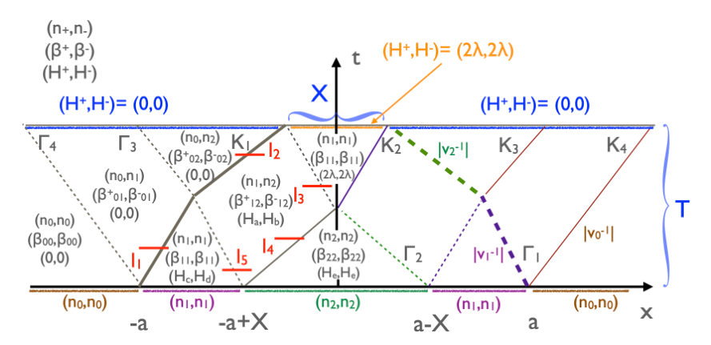
<figcaption class="paper-figure-caption"><b>Fig 4.</b> Figure 4. Illustration of the consistent solution with 3-plateau piece-wise constant initial filling functions in the large-ζ (T/X) regime. The dashed lines correspond to characteristic curves that describe the propagation of the contact discontinuities to the left direction (K1, K2, K3, and K4). The solid lines correspond to characteristic curves that describe the propagation of the contact discontinuities to the right direction (Γ1, Γ2, Γ3, and Γ4). The slopes of these curves equal the inverse (effective) velocities; their absolute values are the same for lines with the same colour. In the left half, within each polygon, we showed the values of the various hydrodynamic fields in...</figcaption>
</figure>
<figure class="paper-figure-card">
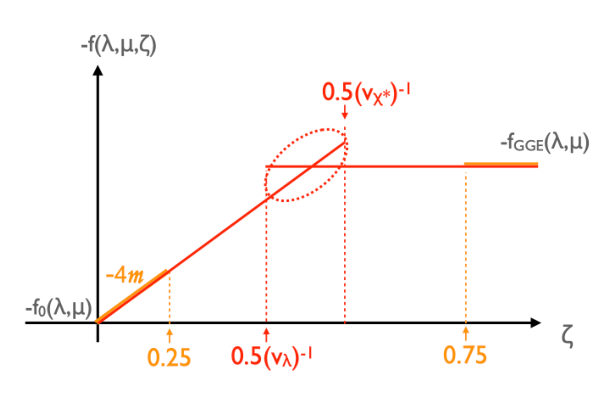
<figcaption class="paper-figure-caption"><b>Fig 5.</b> Figure 5. Illustration of two branches of analytic solutions for the time evolutions of the FCS as a function of ζ = T/X (red lines). The orange lines denote the exact microscopic predictions using space-time swap ideas.</figcaption>
</figure>
</div>

<p><strong>Summary.</strong> This paper extends the Ballistic Macroscopic Fluctuation Theory (BMFT) to describe large-scale fluctuations in integrable quantum systems after a quench. By treating the problem via a path integral and solving it using saddle-point methods, the authors derive the time evolution of the Full-Counting-Statistics. They successfully apply this generalized theory to model both free fermions and the Rule 54 cellular automaton.</p>
<p><strong>Why it may be interesting.</strong> This work provides a powerful, generalized framework (BMFT) to study non-equilibrium dynamics in integrable quantum systems, which is highly relevant for understanding quench dynamics in quantum simulators or ultracold atomic systems.</p>
<details>
<summary>Detailed structure</summary>
<p><strong>Main problem.</strong> The paper extends the Ballistic Macroscopic Fluctuation Theory (BMFT) to analyze large-scale correlations in integrable quantum systems following a quench, moving beyond quasi-equilibrium settings.</p>
<p><strong>Main result.</strong> The time evolution of the Full-Counting-Statistics (FCS) is determined by solving saddle-point equations derived from the path integral, yielding exact solutions for free fermions and the Rule 54 cellular automaton.</p>
<p><strong>Method.</strong> The authors employ a path-integral formulation based on BMFT, solving the resulting partial differential equations (PDEs) via saddle-point approximation to track the evolution of the FCS.</p>
<p><strong>Model / system.</strong> The study focuses on integrable quantum many-body systems, specifically testing the formalism on free fermions and the interacting cellular automaton Rule 54, which are characterized by conserved charges and quasiparticle excitations.</p>
<p><strong>Key observables.</strong> Full-Counting-Statistics (FCS) of a conserved charge, rapidity distributions ($
ho_{t,  heta}$), pseudo-energy ($\epsilon_    heta$), and free energy density ($f$).</p>
<p><strong>Important parameters / regimes.</strong> The analysis is performed in the ballistic limit ($T \propto X$) and involves parameters related to the initial state preparation and the system's conserved charges.</p>
<p><strong>Assumptions / limitations.</strong> The formalism assumes the existence of a well-defined quasiparticle content and relies on extending the BMFT framework from quasi-equilibrium to the quench regime.</p>
<p><strong>Figures summary.</strong> Not specified in the notes.</p>
<p><strong>Paper structure.</strong> The paper develops the theory by first establishing the necessary mathematical machinery using specific models (Free Fermions, Rule 54) to derive the governing PDEs for the FCS, and then solving these equations explicitly for the chosen systems.</p>
</details>
<details>
<summary>Abstract</summary>
<p>The Ballistic Macroscopic Fluctuation Theory (BMFT) is a path-integral based approach to treat large-scale correlations in interacting integrable systems which, so far, has only been applied to quasi-equilibrium settings. In this paper we extend this approach to integrable quench problems and, to illustrate it, we compute the time evolution of the full-counting-statistics (FCS) of a conserved charge. We identify the relevant path integral, solve it via saddle-point, and obtain a set of partial differential equations describing the dynamics of the FCS. We solve these equations explicitly for free fermionic systems and for the interacting cellular automaton Rule 54. In both cases, we recover the known exact results. For Rule 54, our construction moreover completes the solution across the entire ballistic window.</p>
</details>
<p><sub><a href="#top">↑ back to top</a></sub></p>

<p><a id="paper-2609.08811"></a></p>
<h3 id="dual-trigger-of-series-nanowire-detector-for-event-based-photon-number-assignment"><a href="http://arxiv.org/abs/2609.08811v1">Dual-Trigger of Series Nanowire Detector for Event-Based Photon Number Assignment</a></h3>
<p><strong>Authors:</strong> Stefanie Grotowski, Daniel Landes, Fabian Wietschorke, Paul Pucknus, Rasmus Flaschmann, Torsten Langer, Torsten Krause, Kai Müller, Jonathan J. Finley<br>
<strong>Type:</strong> experiment · <strong>Category:</strong> quantum information and computing · <strong>PDF:</strong> <a href="https://arxiv.org/pdf/2609.08811v1">https://arxiv.org/pdf/2609.08811v1</a><br>
<strong>Analysis basis:</strong> full PDF text, analyzed in chunks
<strong>Topic relevance:</strong> 🔥 <code>QC/QI experiment</code> <strong>4/5</strong> · <code>Full counting statistics</code> <strong>3/5</strong> · <code>quantum measurements</code> <strong>3/5</strong> · <code>quantum optics experiment</code> <strong>3/5</strong> · <code>analog quantum simulation</code> <strong>1/5</strong></p>
<div class="figure-strip-hint">↔ Scroll figures horizontally</div>
<div class="paper-figures-scroll">
<figure class="paper-figure-card">
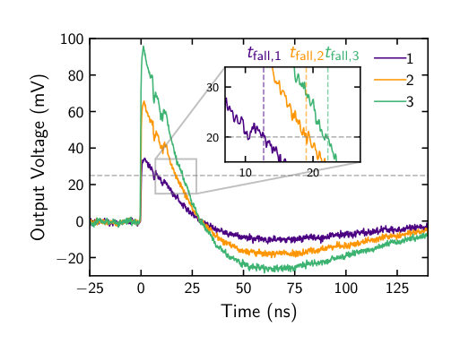
<figcaption class="paper-figure-caption"><b>Fig 1.</b> FIG. 1: Waveform schematic of how the trigger levels of the rising and falling edge are chosen to achieve separation in the 2D heatmap of the photon number.</figcaption>
</figure>
<figure class="paper-figure-card">
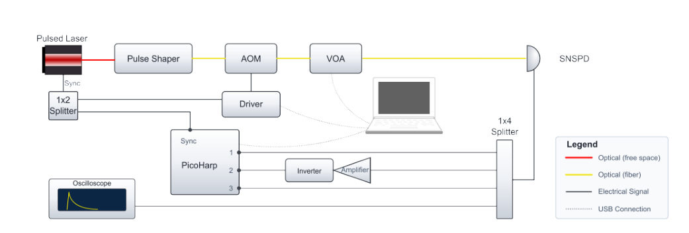
<figcaption class="paper-figure-caption"><b>Fig 2.</b> FIG. 2: Schematic overview of used the measurement setup. The excitation light is guided to the SNSPDs through a pulse shaper, an AOM and VOA to control the pulse duration, repetition rate and attenuation, respectively. The SNSPD output signal is split into four channels, with three connected to the PicoHarp and one serving as a reference on the oscilloscope. The signal at channel (ii) is amplified and inverted to be compatible with the CFD mode.</figcaption>
</figure>
<figure class="paper-figure-card">
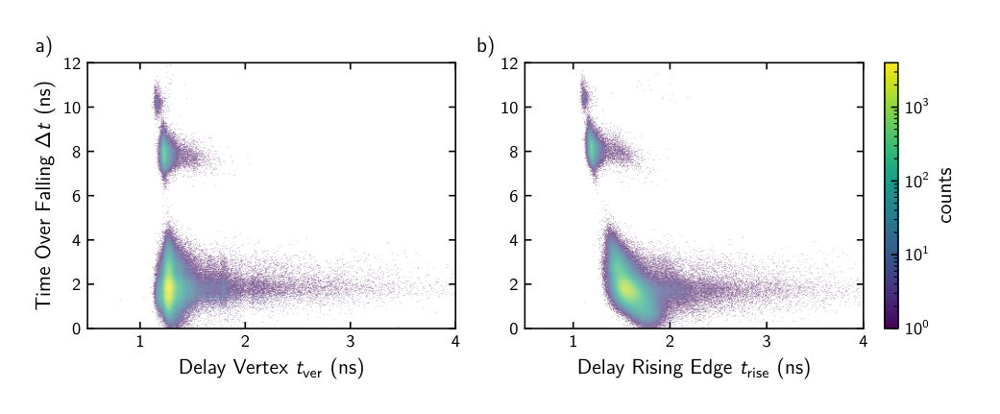
<figcaption class="paper-figure-caption"><b>Fig 3.</b> FIG. 3: 2D heatmap of the delay of the rising edge and falling edge relative to the sync signal. a) CFD mode and b) Edge mode on rising edge. A clear separation of the photon levels in island shapes is visible.</figcaption>
</figure>
<figure class="paper-figure-card">
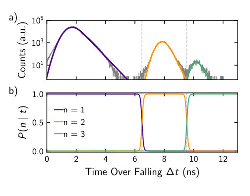
<figcaption class="paper-figure-caption"><b>Fig 4.</b> FIG. 4: a) Data collapsed along the x-axis to resolve the photon-number encoding given by tfall. The data is modeled with EMG functions. b) Calculated weighted probabilities for the photon number n at a given time delay t.</figcaption>
</figure>
<figure class="paper-figure-card">
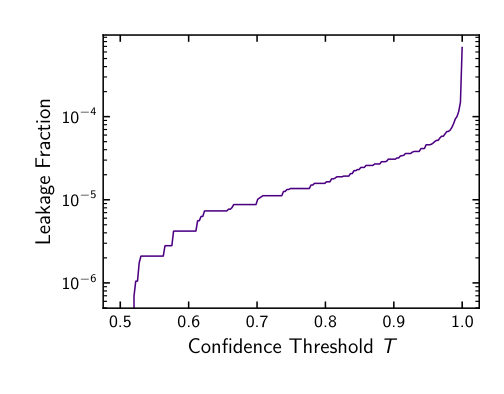
<figcaption class="paper-figure-caption"><b>Fig 5.</b> FIG. 5: Te fraction of measured events with P(n⋆| t)¡T, as a function of the confidence threshold T. At T = 0.99 the leakage fraction remains below 0.01 %.</figcaption>
</figure>
</div>

<p><strong>Summary.</strong> This paper introduces a dual-trigger readout technique for superconducting nanowire single-photon detectors to overcome limitations in photon-number resolution. By measuring the time difference between the pulse's rising and falling edges, the authors can reliably assign the number of incident photons ($n=1, 2, 3$). The technique proves robust, offering high certainty and revealing that the timing jitter itself depends on the photon number, which is crucial for timing-sensitive quantum applications.</p>
<p><strong>Why it may be interesting.</strong> This work directly addresses the hardware limitations in quantum optics by providing a high-precision, low-latency readout mechanism essential for building quantum communication and computation devices.</p>
<details>
<summary>Detailed structure</summary>
<p><strong>Main problem.</strong> Conventional single-channel readout methods struggle to resolve the photon number ($n$) in real time or accurately characterize how timing jitter depends on $n$ for photonic quantum technologies.</p>
<p><strong>Main result.</strong> The dual-trigger method successfully establishes a robust, low-latency readout scheme, allowing for clear separation and assignment of $n=1, 2,$ or $3$ photons with high confidence.</p>
<p><strong>Method.</strong> The authors employ a dual-trigger method on a series-connected superconducting nanowire detector, triggering on both the rising and falling edges of the detection pulse to encode photon number in the time delay between these edges.</p>
<p><strong>Model / system.</strong> The experiment uses a three-pixel series-connected superconducting nanowire single-photon detector (SND) operated at 2.3 K, read out using both edge-triggering and Constant-Fraction Discrimination (CFD) techniques.</p>
<p><strong>Key observables.</strong> Photon number assignment ($n=1, 2, 3$), timing jitter (which decreases as $n$ increases), and the time interval ($\Delta t$) between the rising and falling edges.</p>
<p><strong>Important parameters / regimes.</strong> The technique achieves 99% assignment certainty; timing jitter reaches values below 41 ps for $n \geq 2$.</p>
<p><strong>Assumptions / limitations.</strong> The primary assumption is that the time delay between the rising and falling edges can be reliably mapped to the photon number, and that CFD provides a superior, threshold-independent timestamp.</p>
<p><strong>Figures summary.</strong> Figures illustrate the waveform schematic showing separation via dual triggers, the measurement setup, and plots detailing timing jitter vs. photon number and mean arrival time shifts.</p>
<p><strong>Paper structure.</strong> The paper introduces the limitations of current PNR detection, details the dual-trigger methodology using the SND, compares CFD vs. edge-triggering, presents quantitative results on photon number assignment certainty, and concludes by summarizing the photon-number-dependent jitter.</p>
</details>
<details>
<summary>Abstract</summary>
<p>Photon-number-resolving (PNR) detectors are essential components of photonic quantum technologies. However, conventional single-channel edge-triggered readout struggles to resolve the photon number $n$ in real time or to characterize how timing jitter depends on $n$. In this work, we use a dual-trigger method on a three-pixel series-connected superconducting nanowire single-photon detector (SNSPD) that triggers on both the rising and falling edges of the detection pulse. By doing so, we preserve the precise arrival time of the detection event while mapping the photon number onto the time interval between the rising and falling edges, allowing clear separation of the events. Using this technique, we assign each detection event to $n = 1, 2,$ or 3 photons with $99\,\%$ posterior confidence across all three classes. The timing jitter decreases as $n$ increases, reaching values below $41\, \text{ps}$ for $n \geq 2$. Comparing edge-triggering with constant-fraction discrimination (CFD) for arrival-time extraction, we find that CFD yields lower jitter for single-photon events and a nearly constant mean arrival time. Altogether, our results establish dual-triggering as a robust, low-latency readout scheme for PNR detectors, while revealing a photon-number dependence of the timing jitter relevant to timing precision achievable in heralded photonic quantum applications.</p>
</details>
<p><sub><a href="#top">↑ back to top</a></sub></p>

<p><a id="paper-2609.08598"></a></p>
<h3 id="recovering-readout-limited-fisher-information-in-superconducting-qubit-magnetometry-with-squeezed-microwaves"><a href="http://arxiv.org/abs/2609.08598v1">Recovering Readout-Limited Fisher Information in Superconducting-Qubit Magnetometry with Squeezed Microwaves</a></h3>
<p><strong>Authors:</strong> M. -R. Yun, Y. -J. Qu, Zheng Shan, L. -L. Yan, Yu Jia, S. -L. Su<br>
<strong>Type:</strong> theory · <strong>Category:</strong> other · <strong>PDF:</strong> <a href="https://arxiv.org/pdf/2609.08598v1">https://arxiv.org/pdf/2609.08598v1</a><br>
<strong>Analysis basis:</strong> full PDF text, analyzed in chunks
<strong>Topic relevance:</strong> 🔥 <code>quantum measurements</code> <strong>4/5</strong> · <code>quantum optics experiment</code> <strong>3/5</strong> · <code>QC/QI experiment</code> <strong>2/5</strong> · <code>Tavis-Cummings &amp; cavity-many-emitter</code> <strong>2/5</strong> · <code>analog quantum simulation</code> <strong>1/5</strong> · <code>interference shaping light</code> <strong>1/5</strong> · <code>methods for driven-dissipative</code> <strong>1/5</strong></p>
<div class="figure-strip-hint">↔ Scroll figures horizontally</div>
<div class="paper-figures-scroll">
<figure class="paper-figure-card">
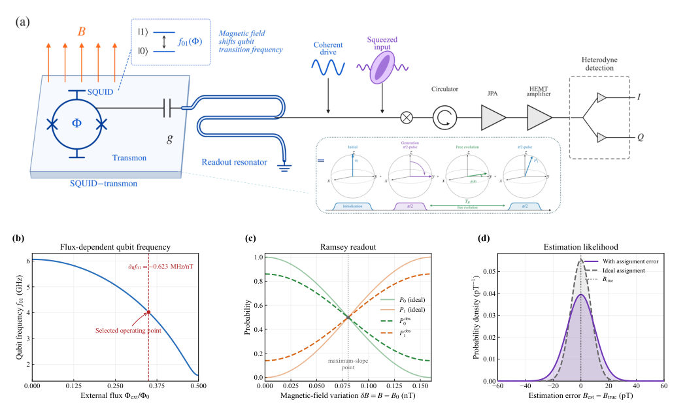
<figcaption class="paper-figure-caption"><b>Fig 1.</b> FIG. 1: Schematic and operating principle of superconducting-qubit magnetometry with squeezed-microwave-assisted dispersive readout. (a) Measurement architecture and Ramsey phase encoding. (b) Flux-dependent qubit transition frequency with the selected operating point. (c) Ideal and observed Ramsey populations with representative symmetric state-assignment error. (d) Corresponding finite-sample magnetic-field likelihoods, showing the broadening induced by imperfect readout.</figcaption>
</figure>
<figure class="paper-figure-card">
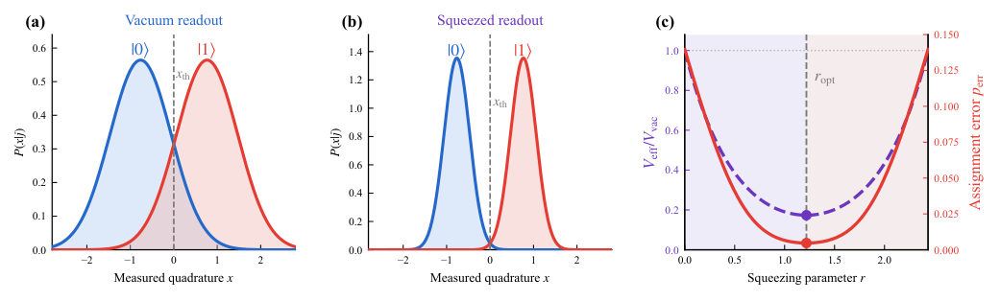
<figcaption class="paper-figure-caption"><b>Fig 2.</b> FIG. 2: Squeezing-enhanced qubit readout. (a) State-conditioned distributions along the discrimination quadrature x for vacuum readout. (b) Distributions at the optimal squeezing strength, showing reduced overlap at fixed pointer- state separation. (c) Normalized projected variance Veff/Vvac (purple dashed) and assignment error perr (red solid) versus squeezing parameter r for θmis = 5◦. The vertical dashed line indicates ropt.</figcaption>
</figure>
<figure class="paper-figure-card">
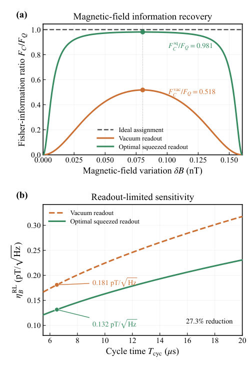
<figcaption class="paper-figure-caption"><b>Fig 3.</b> FIG. 3: Readout-limited Fisher-information recovery and magnetic-field sensitivity. (a) FC/FQ over one half of the Ramsey fringe for ideal assignment, vacuum readout, and optimal squeezed readout. The midfringe values are 0.518 and 0.981 for vacuum and squeezed readout, respec- tively. (b) Readout-limited sensitivity ηRL B versus cycle time Tcyc. At Tcyc = 6.5 µs, optimal squeezing improves the sensitivity from 0.181 to 0.132 pT/ √</figcaption>
</figure>
<figure class="paper-figure-card">

<figcaption class="paper-figure-caption"><b>Fig 4.</b> FIG. 4: Robustness of the squeezed-readout enhancement to quadrature mismatch. (a) Readout-limited sensitivity improvement RB versus squeezing strength r and mismatch angle θmis. The white dashed curve indicates ropt, and the dotted contour marks RB = 0. The highlighted point corresponds to θmis = 5◦and ropt ≃1.22. (b) Optimal squeezing strength ropt and maximum sensitivity improvement Ropt B as functions of θmis. (c) Near-optimal squeezing window [r−, r+] satisfying RB ≥0.95Ropt B .</figcaption>
</figure>
<figure class="paper-figure-card">

<figcaption class="paper-figure-caption"><b>Fig 5.</b> Fig. 1(a). A coherent readout tone and a squeezed mi- crowave field are applied to the dispersively coupled res- onator, and the outgoing field is routed through a cir- culator and amplified by a low-noise parametric ampli- fier followed by a HEMT amplifier [24]. After phase- referenced demodulation and temporal integration, the measurement record is projected onto the calibrated dis- crimination quadrature used for state assignment. Rep- resentative device and readout parameters are summa- rized in Table I. The vacuum-readout performance is characterized by SNRvac = 2.16, which sets the reference discrimination performance against which the squeezed- readout enhancement is evaluated. The...</figcaption>
</figure>
</div>

<p><strong>Summary.</strong> This paper analyzes superconducting-qubit magnetometry, focusing on how readout noise limits the achievable magnetic-field sensitivity. By developing a framework linking readout noise to the classical Fisher information, the authors show that applying squeezed microwaves can recover significant amounts of lost information. This results in a measurable improvement in sensor sensitivity, offering a practical path for quantum sensing.</p>
<p><strong>Why it may be interesting.</strong> This work is highly relevant to AMO physics and quantum optics as it provides a concrete, quantitative method for mitigating measurement-stage noise limitations in superconducting quantum sensors using quantum noise control techniques like squeezing.</p>
<details>
<summary>Detailed structure</summary>
<p><strong>Main problem.</strong> The paper quantifies how using squeezed microwaves during the readout process can recover magnetic-field information lost during the state assignment stage in superconducting-qubit magnetometry.</p>
<p><strong>Main result.</strong> Squeezed readout can reduce the readout-limited magnetic-field sensitivity bound by 27.3% by recovering information lost during measurement, rather than by improving the initial encoding.</p>
<p><strong>Method.</strong> The authors develop an effective detected-mode framework linking projected quadrature noise, state-assignment error, and the classical Fisher information accessible from binary readout outcomes.</p>
<p><strong>Model / system.</strong> The system is a superconducting-qubit magnetometer using flux-tunable transmon qubits coupled to a microwave resonator (Circuit QED). The analysis involves modeling the dispersive readout process and incorporating quantum noise reduction via squeezing.</p>
<p><strong>Key observables.</strong> Readout-limited magnetic-field sensitivity bound ($\eta_{RL}^B$), Classical Fisher Information ($F_C$), projected quadrature noise ($V_j$), and state-assignment error ($   ext{perr}$).</p>
<p><strong>Important parameters / regimes.</strong> Squeezing strength ($r$), quadrature mismatch angle ($   heta_j$), and the coupling/detuning parameters of the circuit QED setup.</p>
<p><strong>Assumptions / limitations.</strong> The analysis models the readout process using the quantum Langevin equation and assumes the dispersive regime for the qubit-resonator interaction.</p>
<p><strong>Figures summary.</strong> Figures illustrate the magnetometry principle, showing how imperfect readout broadens the likelihood function, and demonstrate the reduction in sensitivity and recovery of Fisher information using squeezing.</p>
<p><strong>Paper structure.</strong> The paper progresses by first establishing the magnetometry protocol, then developing the theoretical framework linking readout noise to accessible Fisher information, and finally quantifying the improvement achieved by optimizing squeezing parameters.</p>
</details>
<details>
<summary>Abstract</summary>
<p>The performance of superconducting-qubit magnetometers depends not only on magnetic-field encoding during Ramsey interrogation, but also on how efficiently the encoded information is recovered during readout. Here we quantify how squeezed-microwave-assisted dispersive readout can recover magnetic-field information lost during qubit-state assignment. We develop an effective detected-mode framework linking projected quadrature noise, state-assignment error, and the classical Fisher information accessible from binary readout outcomes. A finite mismatch between the squeezed quadrature and the discrimination axis produces an optimal squeezing strength through the competition between squeezed and anti-squeezed fluctuations. For representative parameters, squeezed readout reduces the readout-limited magnetic-field sensitivity bound by $27.3\%$. This improvement arises from recovering information lost in the readout stage rather than from increasing the information encoded during Ramsey interrogation. These results may provide a practical route for mitigating measurement-stage information loss in superconducting quantum sensing.</p>
</details>
<p><sub><a href="#top">↑ back to top</a></sub></p>

<p><a id="paper-2609.09129"></a></p>
<h3 id="anderson-orthogonality-scaling-in-the-rabi-driven-heavy-fermi-polaron"><a href="http://arxiv.org/abs/2609.09129v1">Anderson orthogonality scaling in the Rabi-driven heavy Fermi polaron</a></h3>
<p><strong>Authors:</strong> Michael Rautenberg, Tobias Krom, Eugen Dizer, Olivier Bleu, Eleonora Lippi, Tilman Enss, Manfred Salmhofer, Lauriane Chomaz, Matthias Weidemüller<br>
<strong>Type:</strong> both · <strong>Category:</strong> quantum gases · <strong>PDF:</strong> <a href="https://arxiv.org/pdf/2609.09129v1">https://arxiv.org/pdf/2609.09129v1</a><br>
<strong>Analysis basis:</strong> full PDF text, analyzed in chunks
<strong>Topic relevance:</strong> 🔥 <code>analog quantum simulation</code> <strong>4/5</strong> · <code>Keldysh / 2PI / non-Gaussian methods</code> <strong>2/5</strong> · <code>methods for driven-dissipative</code> <strong>2/5</strong> · <code>correlated / nonlocal dissipation</code> <strong>1/5</strong> · <code>driven-dissipative phase transition</code> <strong>1/5</strong> · <code>non-equilibrium universality</code> <strong>1/5</strong> · <code>quantum measurements</code> <strong>1/5</strong> · <code>quantum optics experiment</code> <strong>1/5</strong></p>
<div class="figure-strip-hint">↔ Scroll figures horizontally</div>
<div class="paper-figures-scroll">
<figure class="paper-figure-card">

<figcaption class="paper-figure-caption"><b>Fig 1.</b> FIG. 1. Left panel: Coherently driving a 133Cs impurity (blue sphere) between a non-interacting reference state (|↓⟩≡ Cs |2⟩, bottom left illustration, magnetization M = −1) and an interacting state (|↑⟩≡Cs |1⟩, top left, M = +1) that features tunable interactions with the surrounding fermionic 6Li bath (red dots). The coupling strength is characterized by the Rabi frequency Ω0 of 133Cs without 6Li Fermi sea. Middle panel: The system response is extracted by fitting a damped oscillation (solid lines) with frequency Ωand damping rate Γ to the oscillations of the impurity magnetization M(t) for dif- ferent impurity-bath interactions parametrized by the param- eter 1/(kFa) with the Fermi...</figcaption>
</figure>
<figure class="paper-figure-card">

<figcaption class="paper-figure-caption"><b>Fig 2.</b> FIG. 2. Response of the driven heavy Fermi polaron as a func- tion of drive strength ℏΩ0 for two exemplary impurity-bath interactions 1/(kFa). On the attractive side of the Feshbach resonance (1/(kFa) &lt; 0) the response of the attractive polaron is shown, whereas we probe the repulsive polaron branch on the repulsive side. Error bars indicate fit uncertainties. The solid lines are fits of Eq. (1) used to extract the scaling ex- ponent α, where the shaded areas show the corresponding 1σ confidence band of the fits. The fit results are shown in the in- set with matching colors (data for the remaining interactions can be found in the SM [29]) together with the universal be- havior α =...</figcaption>
</figure>
<figure class="paper-figure-card">

<figcaption class="paper-figure-caption"><b>Fig 3.</b> FIG. 3. Theory comparison of the response of the driven attractive Fermi polaron as a function of drive strength at at- tractive impurity-bath interactions 1/(kFa) = −0.32(4). We show the experimentally measured reduction of Rabi frequen- cies (a) and damping rates (b) together with their predictions from different numerical simulations, see main text and [29]. The scaling prediction of Eq. (1) is shown as solid gray line where the prefactor has been adjusted to match the data. The arrows on the left show predictions for the quasiparticle weight √</figcaption>
</figure>
<figure class="paper-figure-card">

<figcaption class="paper-figure-caption"><b>Fig 4.</b> FIG. 4. Dephasing rates measured as the damping of Rabi oscillations as a function of drive strength (color coded) for different interactions for the attractive (a &lt; 0) and repulsive (a &gt; 0) polaron, respectively. The solid line is the FDA pre- diction for the spectral width (half width at half maximum) in the absence of external drive. A more detailed presentation of the data across different interactions and drive strengths can be found in the SM [29].</figcaption>
</figure>
</div>

<p><strong>Summary.</strong> This paper uses ultracold Fermi polarons to experimentally probe the Anderson Orthogonality Catastrophe (AOC) by coherently driving the system. The authors observe that the Rabi frequency reduction follows the predicted power-law scaling of the AOC, confirming that driven impurities are excellent tools for studying complex quantum many-body dynamics. The work successfully bridges theory and experiment in the context of strongly interacting quantum gases.</p>
<p><strong>Why it may be interesting.</strong> This work provides a clean, controllable platform (ultracold atoms) to observe a fundamental many-body phenomenon (AOC) using local coherent control, bridging quantum optics, many-body physics, and cold atom techniques.</p>
<details>
<summary>Detailed structure</summary>
<p><strong>Main problem.</strong> The study investigates the signatures of the Anderson Orthogonality Catastrophe (AOC) in a dynamically driven many-body system.</p>
<p><strong>Main result.</strong> The measured Rabi frequency exhibits a power-law scaling consistent with AOC predictions, confirming that coherently driven impurities serve as a versatile probe for quantum many-body dynamics.</p>
<p><strong>Method.</strong> The research combines experimental measurements on ultracold atomic mixtures with detailed theoretical modeling using T-matrix and FDA approaches.</p>
<p><strong>Model / system.</strong> The system is a heavy Fermi polaron (impurity) immersed in a non-interacting Fermi sea, realized using an ultracold mixture of $^{6}	ext{Li}$ and $^{133}	ext{Cs}$ atoms, driven by optical Raman spectroscopy.</p>
<p><strong>Key observables.</strong> Rabi frequency ($\Omega$), damping rate ($\Gamma$), and the ratio $\Omega/\Omega_0$ as functions of drive strength and interaction strength.</p>
<p><strong>Important parameters / regimes.</strong> Finite temperature ($T/T_F = 0.25$), drive strength ($\hbar\Omega_0$), and impurity-bath mass ratio ($M/m$).</p>
<p><strong>Assumptions / limitations.</strong> The analysis relies on comparing experimental data to theoretical frameworks like the full T-matrix theory, acknowledging that finite temperature causes small deviations from ideal zero-temperature AOC predictions.</p>
<p><strong>Figures summary.</strong> Figures illustrate the power-law scaling of $\Omega/\Omega_0$ vs. drive strength, comparisons of $\Omega$ and $\Gamma$ vs. interaction strength, and the dependence of these quantities on temperature and mass ratio.</p>
<p><strong>Paper structure.</strong> The paper systematically compares experimental measurements of Rabi oscillations and damping rates against multiple theoretical models (FDA, T-matrix) to extract the AOC scaling exponent and analyze finite-temperature and mass-ratio effects.</p>
</details>
<details>
<summary>Abstract</summary>
<p>The Anderson orthogonality catastrophe (AOC) is a paradigmatic many-body phenomenon in which a local perturbation induces a macroscopic response of a Fermi sea. We probe signatures of the AOC by coherently driving heavy Fermi polarons in an ultracold $^6$Li-$^{133}$Cs mixture. We observe a power-law dependence of the measured Rabi frequency on the drive strength, with exponents consistent with AOC predictions. Finite-temperature simulations quantitatively reproduce the observed scaling, indicating that AOC signatures persist beyond the idealized zero-temperature, infinite-mass limit. The damping of the Rabi oscillations provides access to polaron dephasing and reveals a nonmonotonic drive dependence, qualitatively consistent with current theories. Our results establish coherently driven impurities as a versatile probe of quantum many-body dynamics through local coherent control.</p>
</details>
<p><sub><a href="#top">↑ back to top</a></sub></p>

<p><a id="paper-2609.08414"></a></p>
<h3 id="efficient-quantum-state-preparation-on-quantinuum-hardware"><a href="http://arxiv.org/abs/2609.08414v1">Efficient quantum state preparation on Quantinuum hardware</a></h3>
<p><strong>Authors:</strong> Archie Butterworth, Josh Green, Yusen Wu, Jie Pan, Jingbo Wang<br>
<strong>Type:</strong> both · <strong>Category:</strong> quantum information and computing · <strong>PDF:</strong> <a href="https://arxiv.org/pdf/2609.08414v1">https://arxiv.org/pdf/2609.08414v1</a><br>
<strong>Analysis basis:</strong> full PDF text, analyzed in chunks
<strong>Topic relevance:</strong> 🔥 <code>QC/QI experiment</code> <strong>4/5</strong> · <code>quantum measurements</code> <strong>3/5</strong> · <code>methods for driven-dissipative</code> <strong>2/5</strong> · <code>analog quantum simulation</code> <strong>1/5</strong></p>
<div class="figure-strip-hint">↔ Scroll figures horizontally</div>
<div class="paper-figures-scroll">
<figure class="paper-figure-card">

<figcaption class="paper-figure-caption"><b>Fig 1.</b> Figure 1: TOP: The digitised acoustic pressure signal encoded in the circuit to produce ˜ψ . BOTTOM: The same state expressed in the optimised measurement basis after applying the τ reducing layer, which redistributes the probability amplitudes to reduce τ from 447.29 to 17.49, tightening the theoretical guarantees of the shadow overlap certification procedure.</figcaption>
</figure>
<figure class="paper-figure-card">

<figcaption class="paper-figure-caption"><b>Fig 2.</b> Figure 2: The state preparation circuit consisting of 3 “staircase” layers of SU(4) gates, followed by the τ reducing layer to optimise the shadow overlap certification procedure.</figcaption>
</figure>
<figure class="paper-figure-card">

<figcaption class="paper-figure-caption"><b>Fig 3.</b> Figure 3: Simulation of the shadow overlap process on randomly prepared states with differing fidelity to the target state. 1000 shots were taken on each prepared state. The experimental value of the shadow overlap obtained from the H2-1 hardware is also plotted, giving an estimate of fidelity as Fhw = ⟨˜ψ|ρ| ˜ψ⟩= 0.929 from a shadow overlap result of ¯ωH2-1 = 0.967.</figcaption>
</figure>
<figure class="paper-figure-card">

<figcaption class="paper-figure-caption"><b>Fig 4.</b> Figure 4: Shadow overlap results from ideal noise-free simulation, noisy emulation and the H2-1 trapped ion device.</figcaption>
</figure>
<figure class="paper-figure-card">

<figcaption class="paper-figure-caption"><b>Fig 5.</b> Figure 5: The values of τ and IPR plotted before a), and after b), the action of the τ reducing layer, for randomly generated wave-packets and 3 ground states of lattice hamiltonians. In all cases the τ reducing layer is able to bring down τ by at least 10 orders of magnitude.</figcaption>
</figure>
</div>

<p><strong>Summary.</strong> This paper presents an end-to-end framework for preparing and verifying structured quantum states on trapped-ion hardware. It achieves high fidelity by combining resource-efficient state preparation with a novel basis-change technique. This technique dramatically reduces the measurement overhead required for state certification, making the method scalable for real-world quantum applications.</p>
<p><strong>Why it may be interesting.</strong> The work provides a concrete, hardware-validated protocol for benchmarking structured quantum data, which is crucial for realizing quantum advantage in applications like quantum machine learning or quantum simulation.</p>
<details>
<summary>Detailed structure</summary>
<p><strong>Main problem.</strong> The paper addresses the challenge of efficiently preparing and robustly verifying complex, structured quantum states on near-term quantum hardware.</p>
<p><strong>Main result.</strong> They demonstrated an end-to-end framework achieving high hardware fidelity ($F_{hw} = 0.929$) and introduced a basis-change technique that drastically reduces the sample complexity required for state verification.</p>
<p><strong>Method.</strong> The approach combines resource-efficient state preparation using tensor-network optimization (SSO) with state validation via the shadow overlap method, enhanced by a novel pre-measurement basis-change layer.</p>
<p><strong>Model / system.</strong> The experiments are conducted on the Quantinuum H2-1 trapped-ion platform. The target state is a structured complex quantum state encoding a digitized acoustic signal, which is modeled using Matrix Product States (MPS).</p>
<p><strong>Key observables.</strong> Hardware fidelity ($F_{hw}$), shadow overlap ($ar{\omega}$), and the relaxation time parameter ($  au$).</p>
<p><strong>Important parameters / regimes.</strong> The basis-change technique reduces the verification parameter $\tau$ by over 10 orders of magnitude; the framework requires only 1,000 measurement shots for verification.</p>
<p><strong>Assumptions / limitations.</strong> The primary limitation addressed is that traditional validation methods suffer from prohibitively high sample complexity for structured states.</p>
<p><strong>Figures summary.</strong> Figures compare shadow overlap results across different noise models and plot the relaxation time ($\tau$) and Inverse Participation Ratio (IPR) before and after applying the $\tau$ reducing layer for various structured states.</p>
<p><strong>Paper structure.</strong> The paper first establishes the need for efficient state preparation and certification. It details the use of MPS and SSO for preparation, followed by an analysis of the shadow overlap method and its dependence on $\tau$. The core contribution is the introduction and demonstration of the basis-change layer to mitigate large $\tau$ values, culminating in the end-to-end hardware demonstration.</p>
</details>
<details>
<summary>Abstract</summary>
<p>Preparation and verification of specific quantum states is an important capability for quantum devices to realise advantages over classical computations and algorithms. In this work, we have demonstrated an end-to-end framework that combines resource-efficient quantum state preparation with rapid, robust fidelity verification on near-term quantum hardware. By experimentally preparing and validating a structured complex quantum state encoding a digitized acoustic signal on the Quantinuum H2-1 trapped-ion platform, we achieved a high hardware fidelity of $F_{\mathrm{hw}} = 0.929$. Crucially, this milestone was realized without relying on idealized assumptions or deep fault-tolerant overhead, but rather through resource-minimal circuits optimized for NISQ-era and early fault-tolerant devices.   Furthermore, we addressed a key limitation in current quantum state certification. While validation methods like shadow overlap work well for random states, their sample complexity can become prohibitively high for the structured states used in practical algorithms. We mitigate this by introducing a pre-measurement basis-change technique that reduces the verification parameter, $τ$, by over 10 orders of magnitude for structured targets. This approach tightens the theoretical certification guarantees of the shadow overlap method and integrates tensor-network preparation and shadow validation into a unified workflow. These results shift the paradigm of how structured classical data can be mapped to and verified on quantum hardware under realistic noise and measurement budgets. By compressing a robust verification procedure to just 1,000 measurement shots, this framework offers an immediate, scalable benchmarking standard.</p>
</details>
<p><sub><a href="#top">↑ back to top</a></sub></p>

<p><a id="paper-2609.08925"></a></p>
<h3 id="resilience-beyond-the-light-cone-error-detected-primitives-for-practical-dynamic-circuits"><a href="http://arxiv.org/abs/2609.08925v1">Resilience Beyond the Light Cone: Error-Detected Primitives for Practical Dynamic Circuits</a></h3>
<p><strong>Authors:</strong> Kevin C. Smith, Bibek Pokharel, Satvik Maurya, Maika Takita<br>
<strong>Type:</strong> experiment · <strong>Category:</strong> quantum information and computing · <strong>PDF:</strong> <a href="https://arxiv.org/pdf/2609.08925v1">https://arxiv.org/pdf/2609.08925v1</a><br>
<strong>Analysis basis:</strong> full PDF text, analyzed in chunks
<strong>Topic relevance:</strong> 🔥 <code>QC/QI experiment</code> <strong>4/5</strong> · <code>quantum measurements</code> <strong>3/5</strong> · <code>methods for driven-dissipative</code> <strong>2/5</strong></p>
<div class="figure-strip-hint">↔ Scroll figures horizontally</div>
<div class="paper-figures-scroll">
<figure class="paper-figure-card">

<figcaption class="paper-figure-caption"><b>Fig 1.</b> FIG. 1. The error-detected distribute–collapse framework. (a) Ancilla qubits are prepared in a GHZ state and distributed throughout the device, forming a distributed control. (b) The distribute primitive, which carries out the constant-depth preparation of the distributed control using dynamic circuits. (c) The collapse(n) primitive, which carries out the constant- depth reduction of the distributed control onto a single ancilla. By leveraging the underlying repetition-code-like structure of the distributed control, the baseline implementation (n = 1) can be upgraded to provide error detection (n ≥2) at the cost of a layer of local check gadgets Vn; larger n improves code distance at the...</figcaption>
</figure>
<figure class="paper-figure-card">

<figcaption class="paper-figure-caption"><b>Fig 2.</b> FIG. 2. Demonstrating the impact of error detection (ED) through noisy simulation. (a) Circuit diagram for the sensing-like experiment described in Sec. II B, involving the preparation (distribute) and consumption (collapse(2)∗) of a GHZ state to estimate the phase accumulated under an external field through estimation of ⟨OΠX ⟩. We carry out noisy simulations for N = 52 qubits using Qiskit’s matrix product state backend [53] with T1 = T2 = 250 µs and ϵ2qb = 1.5 × 10−3, chosen to model ibm boston. (b) For each value of mid-circuit measurement and feedforward duration relative to the two-qubit gate duration (τmcm+ff/τ2qb) and readout error (ϵreadout), we determine the distribute mid-circuit...</figcaption>
</figure>
<figure class="paper-figure-card">

<figcaption class="paper-figure-caption"><b>Fig 3.</b> FIG. 3. Examples of constant-depth, long-range and multi-qubit primitives augmented with error-detection using the dis- tribute-collapse framework. distribute∗denotes a variant of distribute that defers feedforward corrections to the col- lapse stage of the circuit, while collapse(n)∗indicates the feedforward corrections can be carried out in post-processing. (a) A long-range two-qubit controlled-unitary. (b) An error-detected, constant-depth fan-out gate. (c) An error-detected, constant-depth multi-qubit Pauli rotation. (d) An error-detected, depth O(k) implementation of the Hadamard test for an arbitrary unitary U of depth k, requiring a single round of mid-circuit measurements and...</figcaption>
</figure>
<figure class="paper-figure-card">

<figcaption class="paper-figure-caption"><b>Fig 4.</b> FIG. 4. Error-detected preparation of Dicke states. (a) A sim- plified variant of the protocol of Ref. [16] for approximately preparing the N-qubit Dicke state of weight k, |DN k ⟩. Single- qubit RY (θ) rotations first prepare a binomially-weighted product state, which is then projected onto the target sec- tor k via r = O(log k) rounds of bit extraction, each a layer of controlled-phase gates followed by an ancilla measurement postselected on 0. Each round can be realized by a single round of distribute–collapse and augmented with error detection, in analogy to the Hadamard test of Fig. 3(d). (b) Constant-depth, error-detected preparation of the W state |DN 1 ⟩, requiring one round of...</figcaption>
</figure>
<figure class="paper-figure-card">

<figcaption class="paper-figure-caption"><b>Fig 5.</b> FIG. 5. Experimental demonstration of our error detection framework on ibm boston. Left: error-detected preparation of a long-range entangled Bell state |Φ+⟩= (|00⟩+ |11⟩)/ √</figcaption>
</figure>
</div>

<p><strong>Summary.</strong> This paper introduces an error-detection scheme for dynamic quantum circuits, enabling the reliable generation of long-range entanglement and complex quantum states in constant depth. By implementing error checks via postselection, the authors overcome fidelity degradation caused by mid-circuit measurements. The results demonstrate that these robust protocols are practically viable on current superconducting quantum hardware.</p>
<p><strong>Why it may be interesting.</strong> It directly addresses the practical limitations of implementing complex, low-depth quantum algorithms by providing a concrete, hardware-tested error mitigation strategy for dynamic circuits.</p>
<details>
<summary>Detailed structure</summary>
<p><strong>Main problem.</strong> The primary challenge is overcoming error accumulation in dynamic quantum circuits, which are necessary to achieve constant-depth, long-range entanglement, due to mid-circuit measurements and classical feedforward latency.</p>
<p><strong>Main result.</strong> The authors developed an error-detection scheme that allows for the preparation of long-range entangled states (e.g., 100-qubit Bell pairs) with fidelity exceeding the baseline dynamic circuit performance, and demonstrated constant-depth W state preparation.</p>
<p><strong>Method.</strong> They propose a general error-detection framework utilizing postselection overhead, which is applied to primitives like controlled global operations ($cU$) via 'distribute' and 'collapse' routines.</p>
<p><strong>Model / system.</strong> The work focuses on dynamic quantum circuits, which augment unitary operations with mid-circuit measurements and classical feedforward. Experiments were performed on a superconducting quantum processor.</p>
<p><strong>Key observables.</strong> Fidelity ($F$), entanglement-certification threshold ($F>0.5$), and circuit depth (aiming for constant depth).</p>
<p><strong>Important parameters / regimes.</strong> System size (up to 100 qubits), error detection parameter ($n$), and depth scaling ($O(k)$ vs. linear depth).</p>
<p><strong>Assumptions / limitations.</strong> The scheme trades infidelity for postselection overhead and assumes the ability to implement the necessary error checks without adding ancillas.</p>
<p><strong>Figures summary.</strong> Figures illustrate the framework, showing the GHZ preparation, the 'distribute' and 'collapse(n)' primitives, and the full $cU$ implementation, detailing the explicit and implicit error checks.</p>
<p><strong>Paper structure.</strong> The paper introduces the error detection framework, provides a unified mathematical framework for various quantum primitives, and concludes with experimental validation on superconducting hardware.</p>
</details>
<details>
<summary>Abstract</summary>
<p>Dynamic circuits, which augment unitary operations with mid-circuit measurements and classical feedforward, can generate long-range entanglement in constant depth, enabling low-depth primitives ranging from nontrivial state preparation to many-qubit entangling gates. Escaping the light-cone constraints of unitary circuits, however, comes at a cost: these primitives typically require a number of mid-circuit measurements that scales with system size and that, together with feedforward latency, can introduce errors that degrade the long-range entanglement they rely on. Here, we alleviate this tension by showing that many such primitives, when cast into a common framework, admit an error-detection scheme that trades infidelity for postselection overhead with no additional ancillas. Our framework thus unifies and upgrades a broad class of primitives including fan-out gates, multi-qubit Pauli rotations, the preparation of W and higher-weight Dicke states, and certain non-normal matrix product states. We also introduce a reduced-depth, error-detected implementation of the Hadamard test, extending the use cases of dynamic circuits to a key algorithmic primitive. Finally, we establish the practical utility of our scheme through experiments on a superconducting quantum processor. We demonstrate the error-detected preparation of a long-range entangled Bell pair spanning a 100-qubit chain with fidelity $F=0.59\pm0.02$, surpassing the entanglement-certification threshold $F>0.5$ that the baseline dynamic-circuit implementation fails to reach ($0.39\pm0.01$). Separately, we demonstrate constant-depth preparation of W states of up to 20 qubits by consuming GHZ states of up to 40 qubits, finding absolute fidelity improvements of $ΔF\approx 0.2$ across the largest sizes studied. Altogether, these results bring low-depth dynamic-circuit primitives within practical reach on present-day hardware.</p>
</details>
<p><sub><a href="#top">↑ back to top</a></sub></p>

<p><a id="paper-2609.08591"></a></p>
<h3 id="multimode-squeezed-light-generation-and-characterization"><a href="http://arxiv.org/abs/2609.08591v1">Multimode squeezed light generation and characterization</a></h3>
<p><strong>Authors:</strong> Alexander Chudakov, Vladislav Severin, Anastasia Poshevkina, Danil Malyshev, Kirill Kuznetsov, Olga Tikhonova, Dmitry Kalashnikov, Polina Sharapova<br>
<strong>Type:</strong> both · <strong>Category:</strong> other · <strong>PDF:</strong> <a href="https://arxiv.org/pdf/2609.08591v1">https://arxiv.org/pdf/2609.08591v1</a><br>
<strong>Analysis basis:</strong> full PDF text, analyzed in chunks
<strong>Topic relevance:</strong> 🔥 <code>quantum optics experiment</code> <strong>4/5</strong> · <code>interference shaping light</code> <strong>3/5</strong> · <code>quantum measurements</code> <strong>1/5</strong></p>
<div class="figure-strip-hint">↔ Scroll figures horizontally</div>
<div class="paper-figures-scroll">
<figure class="paper-figure-card">

<figcaption class="paper-figure-caption"><b>Fig 1.</b> FIG. 1. The sketch of the experimental setup includes three main blocks: Pulse Shaper, Spectrometer and Squeezing Mea- surement. The choice of the system configuration depends on the type of PDC process (0 or II). Here, Laser is the pi- cosecond Ti: Sapphire Coherent Mira 900D pulsed laser, SHG crystal is the crystal for the second harmonic generation, PBS plate is the polarizing beam-splitting plate, PDC crystal is the crystal for producing the type-0(II) PDC process, M(1-5) are mirrors, DG1(2) are diffraction gratings, L1(2) are lenses, FM1(2) are flip mirrors, SLM is the spatial light modula- tor, PM is the piezo-mirror, PBS(1-4) are polarizing beam- splitting cubes, HWP(1-3) are...</figcaption>
</figure>
<figure class="paper-figure-card">

<figcaption class="paper-figure-caption"><b>Fig 2.</b> FIG. 2. Joint spectral intensities normalized to unity at their maximum for the (a) type-0 PDC and (b) type-II PDC processes. (c) Normalized theoretical (dashed) and experimental (solid) PDC spectra for the type-0 (red) and type-II (blue) PDC processes.</figcaption>
</figure>
<figure class="paper-figure-card">

<figcaption class="paper-figure-caption"><b>Fig 3.</b> FIG. 3. Schmidt modes normalized to unity at their maximum value: (a) for the type-0 process and (b) for the type-II process. (c) Spectra of the local oscillator after pulse shaping (black) and the corresponding fitting curves (red). The fitting was performed using the squared Hermite–Gaussian functions.</figcaption>
</figure>
<figure class="paper-figure-card">

<figcaption class="paper-figure-caption"><b>Fig 4.</b> FIG. 4. Measured squeezing and antisqueezing in the first three PDC modes defined by the spectral shape of the LO: a) type-0 PDC; b) type-II PDC. The inserts show a zoom of the marked regions with a fit calculated using Eq. 18 together with Eq. 11 and Eq. 16 for the type-0 and type-II PDC processes, respectively.</figcaption>
</figure>
<figure class="paper-figure-card">

<figcaption class="paper-figure-caption"><b>Fig 5.</b> FIG. 5. Phase masks for the first three Hermite-Gauss modes: a) HG0; b) HG1; c) HG2.</figcaption>
</figure>
</div>

<p><strong>Summary.</strong> This paper presents a comprehensive theoretical and experimental study of multimode squeezed light generated using Type-0 and Type-II Optical Parametric Amplifiers. By employing Schmidt-mode theory and pulse shaping, the authors characterize the squeezing in relation to the local oscillator's spectral profile. The results confirm the feasibility of generating and measuring these complex quantum states, which has implications for advanced quantum protocols.</p>
<p><strong>Why it may be interesting.</strong> This work is highly relevant to quantum optics and open quantum systems, providing detailed methods for characterizing complex, multi-mode quantum states generated in nonlinear optical processes.</p>
<details>
<summary>Detailed structure</summary>
<p><strong>Main problem.</strong> The paper theoretically and experimentally characterizes multimode squeezed light generated via Type-0 and Type-II Optical Parametric Amplifiers (OPAs). It specifically investigates how the measured squeezing depends on the spectral profile of the local oscillator (LO).</p>
<p><strong>Main result.</strong> The study successfully characterizes the multimode squeezing for both PDC types, showing good agreement between theoretical predictions and experimental measurements, while also analyzing the impact of optical losses.</p>
<p><strong>Method.</strong> The analysis employs Schmidt-mode theory for theoretical modeling and uses homodyne detection combined with pulse shaping techniques for experimental characterization.</p>
<p><strong>Model / system.</strong> The system involves generating multimode squeezed light using Type-0 and Type-II PDC in a single-pass OPA. The theoretical framework utilizes the Schmidt-mode decomposition of the Joint Spectral Amplitude (JSA) to diagonalize the effective Hamiltonian.</p>
<p><strong>Key observables.</strong> Measured quadrature variance ($\Delta P_{LO}$), multimode squeezing parameter ($r_{	ext{dB}}$), and anti-squeezing ($ ext{ASq}$) values.</p>
<p><strong>Important parameters / regimes.</strong> LO spectral profile, coupling strengths ($\Gamma$), detection efficiency (e.g., 70%), and the type of PDC (Type-0 vs. Type-II).</p>
<p><strong>Assumptions / limitations.</strong> The analysis assumes specific commutation relations for the Schmidt operators and incorporates losses into the variance calculations.</p>
<p><strong>Figures summary.</strong> Figures illustrate the optical setup, Joint Spectral Intensities (JSIs) for both PDC types, Schmidt modes, and the measured/calculated squeezing and anti-squeezing across multiple Hermite-Gaussian (HG) modes.</p>
<p><strong>Paper structure.</strong> The paper progresses from theoretical modeling using Schmidt-mode theory to detailed calculations for Type-0 and Type-II PDC, followed by an experimental section detailing the setup, measurements, and comparison of results with theory.</p>
</details>
<details>
<summary>Abstract</summary>
<p>Nowadays, the realization of quantum computations and communications based on continuous variables has attracted a significant attention due to a substantial expansion of the system dimensionality. The main progress in this area is attributed to the implementation of multimode systems based on squeezed states of light. One of the simplest ways to generate such states relies upon their producing in a single-pass optical parametric amplifier (OPA) using ultrafast pumping. However, for homodyne detection of such multimode states, the profile of the local oscillator (LO) must perfectly match the profile of the measured mode. Usually, this is not the case; therefore a proper treatment of multimode squeezing is required. In this work, we study both theoretically and experimentally the multimode squeezed light generated in type-0 and type-II OPA. We characterize such sources and investigate the degree of squeezing in dependence on the LO spectral profile, employing a pulse shaping technique. The theoretical analysis is performed using the Schmidt-mode theory. This work might have a significant impact on the realization of multimode quantum protocols</p>
</details>
<p><sub><a href="#top">↑ back to top</a></sub></p>

<p><a id="paper-2609.09067"></a></p>
<h3 id="on-spectral-properties-of-generalized-kadanoff-baym-ansatz"><a href="http://arxiv.org/abs/2609.09067v1">On spectral properties of Generalized Kadanoff--Baym Ansatz</a></h3>
<p><strong>Authors:</strong> Miroslav Hopjan<br>
<strong>Type:</strong> theory · <strong>Category:</strong> strongly correlated electrons · <strong>PDF:</strong> <a href="https://arxiv.org/pdf/2609.09067v1">https://arxiv.org/pdf/2609.09067v1</a><br>
<strong>Analysis basis:</strong> full PDF text, analyzed in chunks
<strong>Topic relevance:</strong> 🔥 <code>Keldysh / 2PI / non-Gaussian methods</code> <strong>4/5</strong> · <code>methods for driven-dissipative</code> <strong>3/5</strong> · <code>analog quantum simulation</code> <strong>1/5</strong></p>
<div class="figure-strip-hint">↔ Scroll figures horizontally</div>
<div class="paper-figures-scroll">
<figure class="paper-figure-card">

<figcaption class="paper-figure-caption"><b>Fig 1.</b> Fig. 1: The spectral function of homogeneous 6-site Hub- bard ring, comparison of the full KBE (blue) and the HF- eGKBA (orange) spectral functions for various interaction U = 1, 1.5, 2, 3. To achieve the convergence, the spectral func- tion are computed with the artificial broadening γ = 0.5.</figcaption>
</figure>
</div>

<p><strong>Summary.</strong> This work analyzes the spectral properties of the Generalized Kadanoff--Baym Ansatz (GKBA) used to simulate strongly correlated quantum systems like the Hubbard model. While the GKBA offers significant computational speed-ups, the authors demonstrate that at large interaction strengths, the approximation breaks down, leading to unphysical results such as negative spectral functions. This highlights a critical trade-off between computational tractability and physical accuracy in non-equilibrium many-body theory.</p>
<p><strong>Why it may be interesting.</strong> The findings directly address the reliability of advanced non-equilibrium simulation techniques (like GKBA) when applied to strongly correlated materials, providing crucial theoretical warnings about the limits of computational approximations.</p>
<details>
<summary>Detailed structure</summary>
<p><strong>Main problem.</strong> The paper investigates the spectral properties hidden within the collision integral of the Generalized Kadanoff--Baym Ansatz (GKBA) when simulating non-equilibrium quantum fermionic systems.</p>
<p><strong>Main result.</strong> At large interaction strengths, the spectral function obtained using the extended GKBA becomes negative, indicating that the GKBA has significant limitations and may yield unphysical results in strongly correlated regimes.</p>
<p><strong>Method.</strong> The authors compare results from the full Kadanoff--Baym Equations (KBE) against approximations derived from the GKBA and its extension (eGKBA), utilizing mean-field Hartree-Fock approximations.</p>
<p><strong>Model / system.</strong> The study uses a Hubbard cluster (or Hubbard ring model) as the physical system, governed by a Hamiltonian involving hopping and on-site interaction terms.</p>
<p><strong>Key observables.</strong> Single-particle spectral functions, single-particle density matrix, and the single-particle Green's function components.</p>
<p><strong>Important parameters / regimes.</strong> Interaction strength ($U$), which is varied from moderate to large values to test the stability of the approximation.</p>
<p><strong>Assumptions / limitations.</strong> The primary approximation is the use of the GKBA, which truncates reconstruction equations for computational efficiency, leading to the Hartree-Fock-GKBA (HF-GKBA).</p>
<p><strong>Figures summary.</strong> Figure 1 compares the spectral functions obtained from KBE and HF-eGKBA for varying interaction strengths U, showing deviations and negativity for large U.</p>
<p><strong>Paper structure.</strong> The paper introduces the GKBA as a computationally cheaper alternative to KBE, then develops the extended version (eGKBA). The core of the work involves comparing the spectral properties of the eGKBA against the full KBE, culminating in the demonstration of unphysical negative spectral weights at strong coupling.</p>
</details>
<details>
<summary>Abstract</summary>
<p>The Generalized Kadanoff--Baym Ansatz with mean-field propagators is increasingly used to simulate non-equilibrium quantum fermionic and bosonic systems. Compared with the full Kadanoff--Baym equations, its mean-field propagators substantially reduce computational cost, enabling simulations with computational effort that scales linearly with propagation time. However, the time-diagonal structure of the Generalized Kadanoff--Baym Ansatz obscures spectral properties within the collision integral of the transport equation. Here, we recover and investigate these hidden spectral properties using the extended Generalized Kadanoff--Baym Ansatz. For a Hubbard cluster, we compare ground-state spectral functions obtained with the extended Generalized Kadanoff--Baym Ansatz against those from standard Kadanoff--Baym equations. At moderate interaction strengths, the spectral functions show good agreement. At large interaction strengths, however, significant deviations emerge, and the spectral function obtained with the extended Generalized Kadanoff--Baym Ansatz becomes negative. These results demonstrate that, despite its computational advantages, the Generalized Kadanoff--Baym Ansatz has important limitations in strongly interacting regimes and may produce unphysical spectral properties when interactions become sufficiently large.</p>
</details>
<p><sub><a href="#top">↑ back to top</a></sub></p>

<p><a id="paper-2609.09013"></a></p>
<h3 id="preparation-of-a-bell-state-in-an-analogue-device-hosting-the-transverse-field-ising-model"><a href="http://arxiv.org/abs/2609.09013v1">Preparation of a Bell state in an analogue device hosting the transverse-field Ising model</a></h3>
<p><strong>Authors:</strong> Ana Palacios<br>
<strong>Type:</strong> theory · <strong>Category:</strong> quantum information and computing · <strong>PDF:</strong> <a href="https://arxiv.org/pdf/2609.09013v1">https://arxiv.org/pdf/2609.09013v1</a><br>
<strong>Analysis basis:</strong> full PDF text, analyzed in chunks
<strong>Topic relevance:</strong> 🔥 <code>analog quantum simulation</code> <strong>4/5</strong> · <code>QC/QI experiment</code> <strong>3/5</strong> · <code>quantum measurements</code> <strong>1/5</strong></p>
<div class="figure-strip-hint">↔ Scroll figures horizontally</div>
<div class="paper-figures-scroll">
<figure class="paper-figure-card">

<figcaption class="paper-figure-caption"><b>Fig 1.</b> Figure 1. Energy spectrum of H as a function of the coupling strength J.</figcaption>
</figure>
<figure class="paper-figure-card">

<figcaption class="paper-figure-caption"><b>Fig 2.</b> Figure 2. Representation of the schedule for the whole process of Bell state preparation. In a) we present the schedule from an algorithmic perspective (participating Hamiltonians), while in b) we show the schedule in terms of controls of the different terms of the Hamiltonians, more relevant to the hardware implementation.</figcaption>
</figure>
<figure class="paper-figure-card">

<figcaption class="paper-figure-caption"><b>Fig 3.</b> Figure 3. Energy landscape of Hinterp (a) and final infidelities at s = 1 as a function of interpolation time t0 (b) for the first step of the protocol, considering J = 1. In a), levels 0 and 2 are thickened to highlight the relevant gap for the adiabatic process, which is minimum at s = 1 (E2(1) −E0(1) ≃1.8).</figcaption>
</figure>
<figure class="paper-figure-card">

<figcaption class="paper-figure-caption"><b>Fig 4.</b> Figure 4. Energy landscape of H2 for J = 1 (a) and resulting transition matrix element between the first two lowest eigenstates of H1 induced by the oscillation around s∗= 0.5 (i.e., around H1) (b).</figcaption>
</figure>
<figure class="paper-figure-card">

<figcaption class="paper-figure-caption"><b>Fig 5.</b> Figure 5. In a) we show the final infidelity with the target singlet state over a range of parameters. For each J, the optimal t0 is selected over a grid of 10 equally spaced points between 10 and 20 to account (to some degree) for the oscillations in the ground state fidelity of the adiabatic preparation (see Fig. 3.b), but in every case t0 ≃20. Figure b) shows the absolute value of the corresponding amplitudes ε as a function of J.</figcaption>
</figure>
</div>

<p><strong>Summary.</strong> This work details an analogue protocol for generating a Bell state within a superconducting device simulating the transverse-field Ising model. The method combines adiabatic evolution with resonant population transfer, achieving high fidelity comparable to digital gate methods. This demonstrates a powerful, hardware-native approach for quantum state preparation.</p>
<p><strong>Why it may be interesting.</strong> It provides a concrete, hardware-implementable protocol for generating fundamental quantum states using continuous Hamiltonian control, which is highly relevant for superconducting quantum computing architectures.</p>
<details>
<summary>Detailed structure</summary>
<p><strong>Main problem.</strong> The paper proposes a protocol to prepare the singlet Bell state using purely analogue control methods.</p>
<p><strong>Main result.</strong> The protocol achieves fidelities comparable to standard gate-based preparation within similar time scales ($\sim 100$ ns) and shows robustness against systematic control errors.</p>
<p><strong>Method.</strong> The preparation is achieved in two steps: an adiabatic interpolation to reach the ground state of a symmetric Hamiltonian, followed by a resonant population transfer between the two lowest energy levels.</p>
<p><strong>Model / system.</strong> The system is an analogue device hosting the transverse-field Ising model, which can be implemented in superconducting platforms. The Hamiltonian involves terms like $\sigma_x$ and $\sigma_z$ interactions.</p>
<p><strong>Key observables.</strong> Fidelity (target $\approx 1$), Infidelity ($\sim 10^{-4}$), and preparation time ($\sim 100$ ns).</p>
<p><strong>Important parameters / regimes.</strong> Coupling strength $J$, adiabatic interpolation parameter $s$, and Rabi oscillation amplitude $\varepsilon$.</p>
<p><strong>Assumptions / limitations.</strong> The initial state is assumed to be the ground state of the initial Hamiltonian ($H_0$), and the analysis for the second step assumes the two lowest levels are sufficiently isolated.</p>
<p><strong>Figures summary.</strong> Figures illustrate the energy spectrum evolution, the algorithmic vs. hardware control schedule for preparation, and the dependence of final infidelity on time and control parameters.</p>
<p><strong>Paper structure.</strong> The paper details the Hamiltonian, outlines the two-step protocol (adiabatic interpolation followed by resonant transfer), analyzes the fidelity and robustness against systematic errors, and compares results to gate-based methods.</p>
</details>
<details>
<summary>Abstract</summary>
<p>We propose a protocol for preparing the singlet Bell state in an analogue device implementing the transverse-field Ising model with ZZ interactions and local X and Z fields, which can be engineered within the superconducting platform, among others. This protocol is performed by direct control of the terms of the Hamiltonian alone. The method exploits the fact that the singlet state is the first excited state of a symmetric Hamiltonian family, and comprises two steps: an adiabatic interpolation preparing the ground state of said symmetric Hamiltonian, followed by the resonant population transfer between its two lowest energy levels. For realistic parameters, the protocol achieves fidelities comparable to standard gate-based preparation within similar time scales ($\sim$100 ns), and can reach infidelities on the order of $10^{-4}$ with a moderately increased duration. We further analyse robustness against systematic control errors and show that high fidelities are maintained under implementation imperfections.</p>
</details>
<p><sub><a href="#top">↑ back to top</a></sub></p>

<p><a id="paper-2609.08932"></a></p>
<h3 id="real-time-dyson-expansion-for-the-nonequilibrium-math123math-approximation-correlated-spectra-and-dependence-on-the-reference-propagator"><a href="http://arxiv.org/abs/2609.08932v1">Real-time Dyson expansion for the nonequilibrium $GW$ approximation: Correlated spectra and dependence on the reference propagator</a></h3>
<p><strong>Authors:</strong> Erik Schroedter, Jan-Philip Joost, Michael Bonitz, Vojtech Vlcek<br>
<strong>Type:</strong> theory · <strong>Category:</strong> strongly correlated electrons · <strong>PDF:</strong> <a href="https://arxiv.org/pdf/2609.08932v1">https://arxiv.org/pdf/2609.08932v1</a><br>
<strong>Analysis basis:</strong> full PDF text, analyzed in chunks
<strong>Topic relevance:</strong> 🔥 <code>Keldysh / 2PI / non-Gaussian methods</code> <strong>4/5</strong> · <code>methods for driven-dissipative</code> <strong>2/5</strong></p>
<div class="figure-strip-hint">↔ Scroll figures horizontally</div>
<div class="paper-figures-scroll">
<figure class="paper-figure-card">

<figcaption class="paper-figure-caption"><b>Fig 1.</b> Figure 1. Keldysh time contour C = C+ ⊕C−used for the real-time propagation. The system is prepared at the switch- on time ts. The upper (forward) branch C+ runs from ts toward t →∞and the lower (backward) branch C−returns. The two-time Green’s function G(t, t′) is evaluated with both arguments on this contour.</figcaption>
</figure>
<figure class="paper-figure-card">

<figcaption class="paper-figure-caption"><b>Fig 2.</b> Figure 2. Schematic of the off-diagonal reconstruction of the two-time Green’s functions in the (t, t′) plane. Propagation is first performed along the time diagonal t′ = t, yielding the local (time-diagonal) components Gloc(t) and Gloc(t). Within a probe window (dashed circle) of radius Tδ centered on the probe time (tp, tp), the off-diagonal components G(t, t′) and G(t, t′) are then reconstructed by time stepping in t-direction, at fixed t′ (red arrows, t′ ≤t ≤Tmax). Because only the off- diagonal elements inside this window are required, the overall cost is set by the time-diagonal propagation, while Tδ controls the spectral resolution of the probe at tp. Gloc(t) only appears within the...</figcaption>
</figure>
<figure class="paper-figure-card">

<figcaption class="paper-figure-caption"><b>Fig 3.</b> Figure 3. Exact quasiparticle band structure of the two- band chain with four sites at U = 2.5 and γ = 0.5, given by the position of the dominant pole of the exact removal spectrum (of the addition spectrum for empty states), for the undoped system (blue) with fully filled valence band and the hole-doped system (orange) with partially filled valence band (no particles at k = Γ). For the undoped system these energies coincide with the Hartree–Fock eigenvalues, whereas for the doped system the approximate schemes yield band structures that differ from the exact one, cf. Fig. 5. Gray dashed lines are the shared noninteracting bands. Filled/open circles mark occupied/empty single-particle...</figcaption>
</figure>
<figure class="paper-figure-card">

<figcaption class="paper-figure-caption"><b>Fig 4.</b> Figure 4. Relative error ϵrel, Eq. (37), of the ground-state spectral function for the doped system with four sites for varying on-site interaction U compared to the exact result, for (a) the occupied part A&lt; and (b) the unoccupied part A&gt;, as U is scanned from 0 to 4 (probe time tp = 15, δ = 3). The dashed vertical line marks the U = 2.5 working point used in the nonequilibrium applications. The long-range interaction parameter is fixed γ = 0.5.</figcaption>
</figure>
<figure class="paper-figure-card">

<figcaption class="paper-figure-caption"><b>Fig 5.</b> Figure 5. Doped ground-state spectral function A of the four- site chain at U = 2.5. The exact result is drawn behind every trace: gray fill for the occupied A&lt; and hatched fill for the unoccupied A&gt;. All spectra satisfy R A&lt; = Nocc = 6, R A&gt; = Nunocc = 10, R A = 16 (in units of √π/δ). Spectra are displayed at δ = 5.</figcaption>
</figure>
</div>

<p><strong>Summary.</strong> This paper tackles the computational bottleneck of simulating electron correlations in driven quantum materials by developing a Real-time Dyson expansion (RT-DE). This method allows for the calculation of the GW self-energy with dynamical correlations at a time-linear cost. By testing various reference propagators, the authors show that the RT-DE provides accurate spectral features, including excitonic replicas, crucial for understanding photoexcited states.</p>
<p><strong>Why it may be interesting.</strong> The development of time-linear scaling methods for non-equilibrium correlation functions is crucial for simulating ultrafast dynamics in quantum materials, bridging the gap between theory and time-resolved ARPES experiments.</p>
<details>
<summary>Detailed structure</summary>
<p><strong>Main problem.</strong> The primary challenge is extending the accurate GW approximation, which describes electron correlations, to non-equilibrium (time-dependent) conditions while maintaining computational tractability.</p>
<p><strong>Main result.</strong> The authors formulate and implement a Real-time Dyson expansion (RT-DE) that recovers dynamical correlations in the spectrum at a time-linear cost, outperforming previous mean-field or highly scaling methods.</p>
<p><strong>Method.</strong> The core method is the Real-time Dyson expansion applied to the GW self-energy within the Nonequilibrium Green's Functions (NEGF) formalism, utilizing general time-local reference propagators.</p>
<p><strong>Model / system.</strong> The theory is applied to general correlated electron systems, benchmarked using a driven two-band lattice model with long-range interactions, relevant for photoexcited semiconductors.</p>
<p><strong>Key observables.</strong> Time-resolved spectral function, quasiparticle renormalization, and satellite structures (e.g., exciton shake-up).</p>
<p><strong>Important parameters / regimes.</strong> The reference propagator choice (e.g., Hartree-Fock, statically screened, GKBA) significantly influences the accuracy of the resulting spectra.</p>
<p><strong>Assumptions / limitations.</strong> The RT-DE formulation assumes that the off-diagonal evolution of the reference propagator can be treated as time-local, allowing for time-linear scaling.</p>
<p><strong>Figures summary.</strong> Benchmarks against exact diagonalization show that mean-field and statically screened references yield the most accurate spectra, while the GKBA-based approach captures dynamics but artificially broadens peaks.</p>
<p><strong>Paper structure.</strong> The paper first reviews the NEGF/GW framework, then details the RT-DE equations of motion, presents the implementation using various reference propagators, and concludes with numerical results demonstrating spectral accuracy.</p>
</details>
<details>
<summary>Abstract</summary>
<p>Electronic spectra provide direct insight into the excitations and correlations of condensed matter systems. Their description requires electron correlations beyond mean field. In equilibrium, the $GW$ approximation has become the method of choice for many materials. Extending this approximation to nonequilibrium, however, is challenging. Full two-time $GW$ simulations within the nonequilibrium Green's functions approach scale at least cubically with propagation time, whereas improved scaling schemes such as time-local (adiabatic) approximations or the generalized Kadanoff--Baym ansatz usually retain only mean-field character in the spectra. The recently introduced real-time Dyson expansion recovers dynamical correlations in the spectrum at time-linear cost, but has so far been restricted to the second-order Born approximation with mean-field reference propagators. Here we formulate and implement the RT-DE for the nonequilibrium $GW$ self-energy with reference propagators of general form whose off-diagonal evolution is time local. In particular, we assess Hartree--Fock propagators, propagators with statically screened exchange with nonequilibrium screening, and a correlated propagator based on the Hartree--Fock GKBA. Benchmarks against exact diagonalization for a driven two-band lattice model with long-range interactions show that the mean-field and statically screened references yield the most accurate spectra, including satellite structures absent at mean-field level, whereas the GKBA-based approach best captures scattering-induced occupation dynamics, but artificially broadens and splits spectral peaks. When applied to large systems that are beyond the reach of exact methods, the scheme resolves the excitonic replica of the valence band and satellites identified as exciton shake-up, as well as their reshaping with increasing excitation density.</p>
</details>
<p><sub><a href="#top">↑ back to top</a></sub></p>

<p><a id="paper-2609.08014"></a></p>
<h3 id="learned-diffractive-optics-for-quantum-optimal-inference"><a href="http://arxiv.org/abs/2609.08014v1">Learned Diffractive Optics for Quantum-Optimal Inference</a></h3>
<p><strong>Authors:</strong> Matthew J. Filipovich, Alexander Duplinskii, A. I. Lvovsky<br>
<strong>Type:</strong> theory · <strong>Category:</strong> quantum information and computing · <strong>PDF:</strong> <a href="https://arxiv.org/pdf/2609.08014v1">https://arxiv.org/pdf/2609.08014v1</a><br>
<strong>Analysis basis:</strong> full PDF text, analyzed in chunks
<strong>Topic relevance:</strong> 🔥 <code>quantum measurements</code> <strong>4/5</strong> · <code>interference shaping light</code> <strong>1/5</strong></p>
<div class="figure-strip-hint">↔ Scroll figures horizontally</div>
<div class="paper-figures-scroll">
<figure class="paper-figure-card">

<figcaption class="paper-figure-caption"><b>Fig 1.</b> FIG. 1. Learned diffractive optics for photon-limited inference. (a) Inference of the state ρx, encoding the unknown target x, using learned diffractive optical neural network with learned phase profiles ϕ⋆. The state is transformed by the DONN and subsequently detected, generating the detection record m of N photon counts distributed among the detector bins. The record is mapped by the Bayes decision rule to the prediction ˆx. (b) The training procedure for optimizing the phase plate parameters ϕ using a fully differentiable simulation. At each iteration, the input states are propagated through the DONN and the resulting output probability distributions are used to compute the objective L,...</figcaption>
</figure>
<figure class="paper-figure-card">

<figcaption class="paper-figure-caption"><b>Fig 2.</b> FIG. 2. Diffractive optics discriminating two non-orthogonal superposition states of Hermite–Gaussian modes: |ψ1⟩= |HG00⟩and |ψ2⟩= 1</figcaption>
</figure>
<figure class="paper-figure-card">

<figcaption class="paper-figure-caption"><b>Fig 3.</b> FIG. 4. Diffraction-limited incoherent state discrimination in the asymptotic regime of high photon numbers. (a) Blurred digits one and eight at increasing PSF width σ. (b) Chernoff exponent ξ versus the PSF width σ comparing the quantum Chernoff exponent ξQ, the learned optics, DI, and the HG basis with the mode width matched to the PSF. The inset shows the relative gap δσ=20 = ξQ/ξ −1 of the learned Cher- noff exponent at the largest blur σ = 20 versus the number of plates L.</figcaption>
</figure>
<figure class="paper-figure-card">

<figcaption class="paper-figure-caption"><b>Fig 4.</b> FIG. 3. State discrimination of two phase objects at finite photon numbers. (a) The two input states: phase profiles of an erythroblast and an eosinophil with |⟨ψ1|ψ2⟩|2 = 0.70. (b) Perr versus photon number N for the learned optics, stan- dard measurements, and the quantum bounds. The dashed green and blue lines show the optics trained at N = 1 and on the asymptotic (Chernoff) objective, respectively, evaluated across all photon numbers. The inset shows the relative gap δN=1 = P (1) err /P (1) err,Q −1 of the N = 1 learned optics versus the number of plates L.</figcaption>
</figure>
<figure class="paper-figure-card">

<figcaption class="paper-figure-caption"><b>Fig 5.</b> FIG. 5. Estimation of axial localization at finite photon num- ber. (a) Phase profiles of the input state at various param- eter values θ. (b) MSE versus photon number N for the learned optics, standard measurements (DI and Fourier), and the quantum bounds. The dashed green and blue lines show the optics trained at N = 1 and on the asymptotic objec- tive, respectively, evaluated across all photon numbers. The inset shows the relative gap δN=1 = MSE(1)/MSE(1) Q −1 of the learned N = 1 MSE versus the number of plates L.</figcaption>
</figure>
</div>

<p><strong>Summary.</strong> This paper proposes using learned diffractive optics, implemented via DONNs, to design optimal quantum measurements for tasks like object feature inference. By optimizing directly on the task's figure of merit, the method achieves performance approaching fundamental quantum limits with fewer photons than standard techniques. It establishes a powerful, data-driven framework for quantum computational machine vision.</p>
<p><strong>Why it may be interesting.</strong> This work bridges quantum optics, quantum estimation theory, and deep learning, providing a data-driven pathway to designing quantum measurements that approach fundamental physical limits.</p>
<details>
<summary>Detailed structure</summary>
<p><strong>Main problem.</strong> The core problem is achieving quantum-optimal inference (state discrimination or parameter estimation) from limited photon measurements of light fields, especially for complex objects.</p>
<p><strong>Main result.</strong> Learned diffractive optics (DONNs) can be trained to design measurement apparatuses that approach quantum-limited performance, significantly outperforming standard optical measurements.</p>
<p><strong>Method.</strong> The authors use gradient-based inverse design (backpropagation) to optimize the phase profiles of diffractive optical neural networks (DONNs) directly on the task's figure of merit.</p>
<p><strong>Model / system.</strong> The system models light propagation through a series of trainable phase plates ($T_l$) and free-space propagation ($P_l$), forming a POVM $\{E_m\}$ for measurement.</p>
<p><strong>Key observables.</strong> Error probability ($P_{	ext{err}}$) for state discrimination, Mean-Squared Error (MSE) for parameter estimation, and the Chernoff exponent ($\xi$) or Fisher information ($J$).</p>
<p><strong>Important parameters / regimes.</strong> Photon number ($N$), effective Fresnel number ($F$), and the inherent quantum bounds (Helstrom, Personick, QFI).</p>
<p><strong>Assumptions / limitations.</strong> The analysis assumes the single-photon approximation and relies on the differentiability of the optics model for gradient-based optimization.</p>
<p><strong>Figures summary.</strong> Figures compare the error probability/MSE achieved by the trained DONN against standard direct imaging (DI) methods and theoretical quantum bounds across varying photon numbers and object parameters.</p>
<p><strong>Paper structure.</strong> The paper introduces the problem, details the DONN model and training procedure using gradient descent on the figure of merit, and then presents comparative results across state discrimination, parameter estimation, and source separation tasks.</p>
</details>
<details>
<summary>Abstract</summary>
<p>Quantum mechanics sets the ultimate bounds on photon-limited sensing, yet practical measurements attaining these bounds are known only in special cases. This is particularly the case for visual sensing problems, where the goal is to infer features of a distant object based on the spatial structure of the light field it emits or reflects. Because of the potentially complex structure of such objects and fields, constructing optimal measurements on them is a challenging task. Here, we apply learned diffractive optics to state discrimination and parameter estimation of coherent and diffraction-limited incoherent light fields under a restricted photon budget. Optimized directly on each task's figure of merit, without prior knowledge of the optimal measurement, the physically realizable diffractive optical neural networks substantially outperform standard measurements and approach the quantum limits for a given number of photons as well as in the asymptotic limit.</p>
</details>
<p><sub><a href="#top">↑ back to top</a></sub></p>

<p><a id="paper-2609.08374"></a></p>
<h3 id="scaling-enhanced-rapid-readout-of-a-qubit-ensemble-assisted-by-high-frequency-detector-modes"><a href="http://arxiv.org/abs/2609.08374v1">Scaling-Enhanced Rapid Readout of a Qubit Ensemble Assisted by High-Frequency Detector Modes</a></h3>
<p><strong>Authors:</strong> Hiroki Nakabayashi, Yuichiro Matsuzaki<br>
<strong>Type:</strong> theory · <strong>Category:</strong> quantum information and computing · <strong>PDF:</strong> <a href="https://arxiv.org/pdf/2609.08374v1">https://arxiv.org/pdf/2609.08374v1</a><br>
<strong>Analysis basis:</strong> full PDF text, analyzed in chunks
<strong>Topic relevance:</strong> 🔥 <code>quantum measurements</code> <strong>4/5</strong> · <code>correlated / nonlocal dissipation</code> <strong>1/5</strong></p>
<div class="figure-strip-hint">↔ Scroll figures horizontally</div>
<div class="paper-figures-scroll">
<figure class="paper-figure-card">

<figcaption class="paper-figure-caption"><b>Fig 1.</b> FIG. 1. Crossover of the readout time required for SQL pre- cision, defined by ∆2θ(tSQL) = 1/N, for θ = 0.05, n = 2, D = 3, Ω= 1.0, and g = 0.1. The solid curves show tSQL for the finite cutoffs Λ = 10, 50, 100, 150, 200, ordered from top to bottom, together with guide lines proportional to N −2</figcaption>
</figure>
</div>

<p><strong>Summary.</strong> This theoretical paper investigates the scaling limits of quantum readout time for large qubit ensembles. It establishes that while conventional detectors limit readout speed to $N^{-1/2}$, incorporating high-frequency detector modes allows for a superior scaling of $N^{-1/(2-
u)}$. This demonstrates that the spectral structure of the measurement apparatus acts as a tunable resource for accelerating quantum information extraction.</p>
<p><strong>Why it may be interesting.</strong> This work provides a concrete theoretical framework showing how engineering the spectral properties of a measurement apparatus (the detector) can fundamentally improve the scaling of quantum measurement protocols, which is crucial for scaling quantum computation.</p>
<details>
<summary>Detailed structure</summary>
<p><strong>Main problem.</strong> The paper addresses how the readout time scales with the number of qubits ($N$) when performing quantum measurements on large qubit ensembles.</p>
<p><strong>Main result.</strong> By utilizing detector modes with unbounded high-frequency spectra, the readout time can achieve an enhanced scaling of $t_{    ext{readout}} \propto N^{-1/(2-
u)}$, surpassing the conventional $N^{-1/2}$ limit.</p>
<p><strong>Method.</strong> The analysis involves deriving lower bounds on the readout time by quantifying the growth of quantum mutual information ($I_{S:D}(t)$) between the system and the detector.</p>
<p><strong>Model / system.</strong> The system consists of a qubit ensemble (S) coupled to a bosonic detector (D) via an interaction Hamiltonian. The detector's spectral structure is characterized by the parameter $
u$.</p>
<p><strong>Key observables.</strong> Quantum mutual information ($I_{S:D}(t)$), readout time ($t_{	ext{readout}}$), and the error in parameter estimation ($\Delta^2	heta$).</p>
<p><strong>Important parameters / regimes.</strong> The spectral parameter $
u$ ($0 &lt; 
u &lt; 2$), the number of qubits $N$, and the coupling strength $g$.</p>
<p><strong>Assumptions / limitations.</strong> The enhanced scaling relies on the existence of unbounded high-frequency detector modes, and the analysis often assumes large $N$ or specific asymptotic limits.</p>
<p><strong>Figures summary.</strong> Figures likely illustrate the comparison between the conventional $N^{-1/2}$ scaling and the enhanced $N^{-1/(2-
u)}$ scaling for readout time.</p>
<p><strong>Paper structure.</strong> The paper first establishes the conventional $N^{-1/2}$ benchmark using finite detector variance. It then introduces the concept of high-frequency modes, deriving the enhanced scaling law $N^{-1/(2-
u)}$ by analyzing the mutual information bound. Finally, it applies this to specific estimation protocols.</p>
</details>
<details>
<summary>Abstract</summary>
<p>Quantum measurements of large qubit ensembles are often performed indirectly by coupling the ensemble to a detector and subsequently measuring the detector. Despite the importance of rapid collective readout, it remains unclear what determines how the readout time scales with the number of qubits $N$. Here, we first establish a benchmark $N^{-1/2}$ for a broad class of detectors without ultraviolet high-frequency modes. We then show that the detector with unbounded high-frequency modes can surpass this benchmark and yield a characteristic time scaling $N^{-1/(2-ν)}$ for $0 < ν< 2$, where $ν$ characterizes the spectral structure of the detector. Our results establish high-frequency detector modes as a resource for achieving a scaling advantage in collective quantum readout, with the detector spectrum directly controlling the scaling exponent of the readout time.</p>
</details>
<p><sub><a href="#top">↑ back to top</a></sub></p>
<hr>
<p>
<a href="index.html">← Index</a>
 · <a href="papers_02.html">Next →</a>
</p>
<hr>

</body>
</html>
